M4 Parking Check
1 Introduction
1.1 Purpose and scope
This document specifies M4 Parking Check. The app tells a holder of an M4 residential parking permit in Göteborg where and when the permit allows parking. This draft contains the requirements, the screens, the information architecture, the design system, the architecture and the solution design, for review.
1.2 How to read the IDs
| Item | Format | Example |
|---|---|---|
| Epic | EP-nn | EP-08 |
| Feature | FE-nn.mm | FE-08.04 |
| Functional requirement | FR-nn.mm.kkk | FR-08.04.001 |
| Non-functional requirement | NFR-CAT-nnn | NFR-ACC-001 |
| Screen (v1.0) | SC-nn.mm-k | SC-08.04-2 |
| Test case (v1.0) | TC-nnnn | TC-0001 |
An ID never changes and is never used again. A removed requirement keeps its ID with the status Withdrawn.
1.3 Priority, verification and status
- Must The app is not acceptable without it.
- Should Important. The app is acceptable without it for a short time.
- Could Useful if time permits.
- Won't Not in this version.
Verification: Test (a test case checks a result), Demonstration (a person does the steps and sees the result), Inspection (a person examines the screen, the code or the data), Analysis (a calculation or a measurement).
Status: ✓ Implemented · ◐ Implemented, not verified on device · ◑ Partly · ○ Open.
1.4 Summary
| ID | Name | Features | Must | Should | Could | Total |
|---|---|---|---|---|---|---|
| EP-01 | Address and permit check | 4 | 16 | 7 | 3 | 26 |
| EP-02 | Time rules engine | 4 | 14 | 2 | 16 | |
| EP-03 | Start time and stay check | 3 | 14 | 5 | 19 | |
| EP-04 | Week and cleaning awareness | 2 | 8 | 3 | 1 | 12 |
| EP-05 | Map | 5 | 14 | 5 | 1 | 20 |
| EP-06 | Longest stays nearby | 2 | 5 | 4 | 9 | |
| EP-07 | Location | 1 | 4 | 1 | 5 | |
| EP-08 | My car and payment | 5 | 25 | 4 | 29 | |
| EP-09 | Data pipeline | 5 | 14 | 7 | 21 | |
| EP-10 | Distribution | 2 | 6 | 2 | 1 | 9 |
| NFR-ACC | Accessibility and colour vision | – | 2 | 4 | 6 | |
| NFR-USE | Usability and wording | – | 2 | 1 | 3 | |
| NFR-PERF | Performance | – | 3 | 3 | ||
| NFR-OFF | Offline use | – | 1 | 1 | 2 | |
| NFR-PRIV | Privacy | – | 4 | 4 | ||
| NFR-SEC | Security | – | 3 | 1 | 4 | |
| NFR-DATA | Data quality | – | 2 | 2 | 4 | |
| NFR-COMP | Compatibility | – | 2 | 1 | 3 | |
| NFR-MNT | Maintainability | – | 2 | 1 | 3 | |
| NFR-LEG | Licences and credits | – | 2 | 1 | 3 | |
| NFR-VER | Versions | – | 3 | 1 | 4 | |
| Total | 33 | 143 | 55 | 7 | 205 |
10 epics, 33 features, 166 functional and 39 non-functional requirements. 184 implemented, 15 implemented, not verified on device, 6 open.
2 Epics, features and functional requirements
2.1 EP-01 Address and permit check
Goal. The user enters an address. The app tells the user if the permit is valid at that address.
2.1.1 FE-01.01 Street search
The user types a street name. The app finds the correct street even when the user types it differently.
The user stands near a street or plans a trip there, and types the street name. Street names in Göteborg often have accents, and phone keyboards make errors easy. The app finds the correct M-zone street from a short or misspelled name. The app shows the name that it uses, so the user can see a wrong match at once. The user does not need to know the official spelling.
| ID | Requirement | Priority | Verification | Status | Source |
|---|---|---|---|---|---|
| FR-01.01.001 | The app shall let the user enter a street name and a house number. | Must | Test | ✓ Implemented | U2 |
| FR-01.01.002 | The app shall find a street name that the user types without accents. Example: 'Linnegatan' finds 'Linnégatan'. | Must | Test | ✓ Implemented | U5 |
| FR-01.01.003 | The app shall ignore letter case, spaces, hyphens and full stops when it compares street names. | Should | Test | ✓ Implemented | U5 |
| FR-01.01.004 | The app shall accept a street name that ends in 'g' or 'gata' as a short form of 'gatan'. | Could | Test | ✓ Implemented | D1 |
| FR-01.01.005 | The app shall accept one wrong letter in a street name with fewer than 8 letters, and two wrong letters in a longer name. | Could | Test | ✓ Implemented | U5 |
| FR-01.01.006 | When the app uses a corrected street name, the app shall show the street name that it uses. | Must | Test | ✓ Implemented | U5 |
| FR-01.01.007 | The app shall suggest street names from the M-zone street list while the user types. | Should | Demonstration | ✓ Implemented | D1 |
| FR-01.01.008 | The app shall keep the last address that the user checked on the device, and show it at the next start. | Could | Test | ✓ Implemented | D1 |
Screens
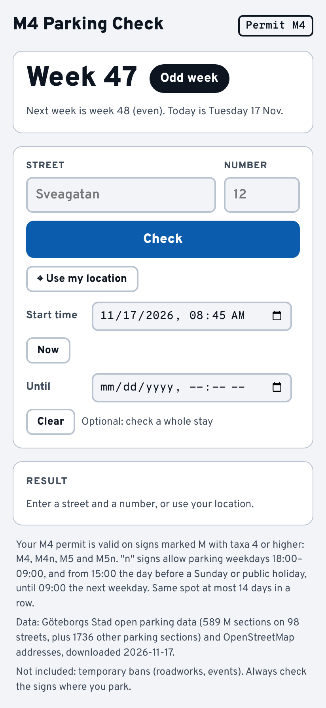
The user opens the app. The user types the street name in Street and the house number in Number.
- 1 Street name
- 2 House number
- 3 Check
Shows: FR-01.01.001
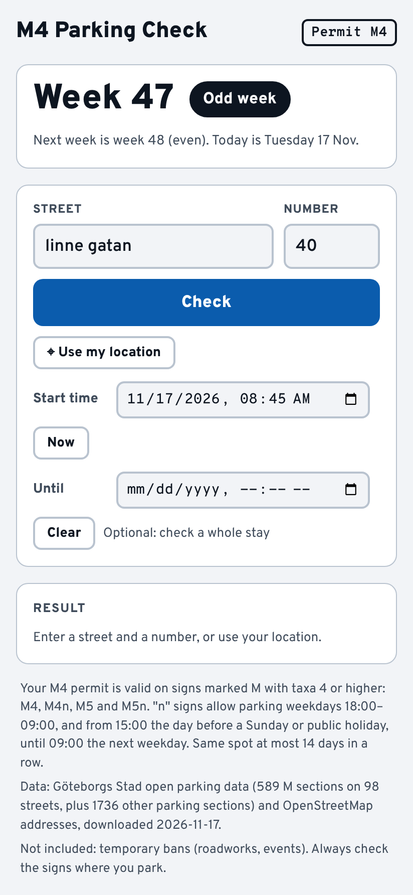
The user types "linne gatan" without the accent and with a space. The user taps Check.
- 1 Name as typed
- 2 Check
Shows: FR-01.01.002, FR-01.01.003
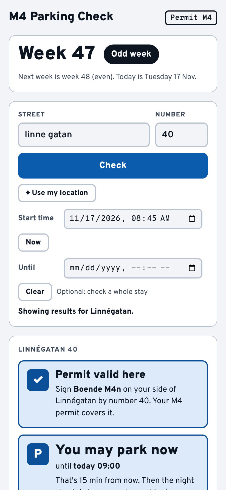
The app finds Linnégatan. The app shows the name that it uses above the result.
- 1 Name that the app uses
- 2 Result title
Shows: FR-01.01.006
2.1.2 FE-01.02 House number location
The app finds the position of the house number on the street.
The user enters the house number where the car is, or where the user wants to park. The app uses the number to find the exact part of the street. On long streets, one part can have different signs from the next part. If the address data has no such number, the app estimates the place and says so. The user then knows that the answer has less certainty.
| ID | Requirement | Priority | Verification | Status | Source |
|---|---|---|---|---|---|
| FR-01.02.001 | The app shall find the position of the house number from the address data. | Must | Test | ✓ Implemented | U2 |
| FR-01.02.002 | The app shall accept a house number with a letter, for example 14A. | Must | Test | ✓ Implemented | U2 |
| FR-01.02.003 | If the address data has no house number with that letter, the app shall use the house number without the letter. | Should | Test | ✓ Implemented | D1 |
| FR-01.02.004 | If the address data has no such house number, the app shall estimate the position. It shall use the nearest numbers with the same odd or even value. | Should | Test | ✓ Implemented | D1 |
| FR-01.02.005 | When the app estimates the position, the app shall tell the user. | Must | Test | ✓ Implemented | D1 |
| FR-01.02.006 | If the street has no house number with the same odd or even value, the app shall show 'House number not found'. | Must | Test | ✓ Implemented | D1 |
Screens
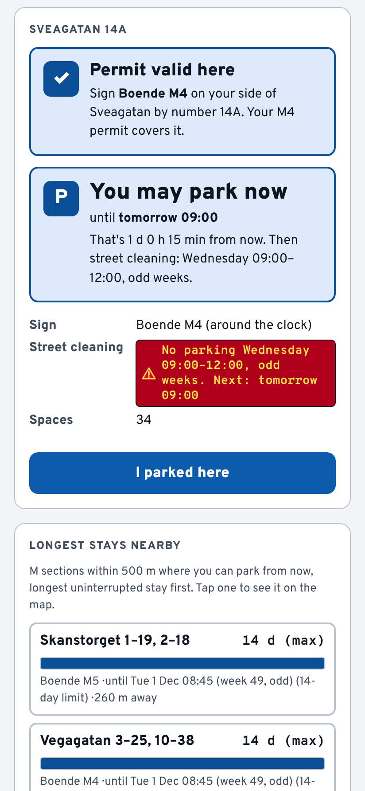
The user enters 14A. The app finds the position of Sveagatan 14A and checks the signs there.
- 1 Address with letter
- 2 Result for that position
Shows: FR-01.02.001, FR-01.02.002
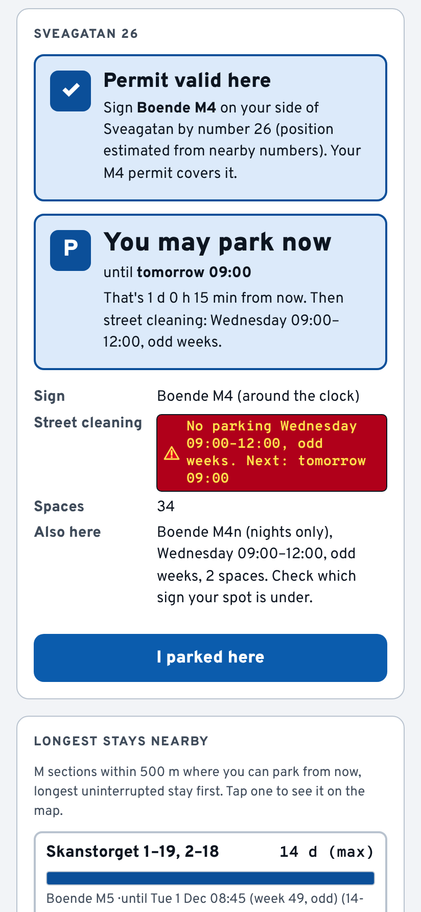
The address data has no Sveagatan 26. The app estimates the position from the nearest even numbers and says so.
- 1 Estimate note
Shows: FR-01.02.004, FR-01.02.005
2.1.3 FE-01.03 Permit validity
The app checks the residential parking signs near the house number against the permit.
Before the user thinks about times, the user must know if the permit is valid at the address. The app compares the signs near the house number with the M4 permit. The user gets a clear yes or no and the sign text, for example Boende M4n. If the street has no M signs, the user knows at once to look elsewhere. If the signs are some distance away, the app gives the distance.
| ID | Requirement | Priority | Verification | Status | Source |
|---|---|---|---|---|---|
| FR-01.03.001 | The app shall treat the permit as valid only on residential parking signs with zone letter M. | Must | Test | ✓ Implemented | R1 |
| FR-01.03.002 | The app shall treat the permit as valid only on signs with taxa 4 or a higher taxa. In zone M, these signs are M4, M4n, M5 and M5n. | Must | Test | ✓ Implemented | R1 |
| FR-01.03.003 | If the street has no M section, the app shall show 'Permit not valid here'. | Must | Test | ✓ Implemented | U2 |
| FR-01.03.004 | The app shall show the sign text of the M section that it uses, for example 'Boende M4n'. | Must | Test | ✓ Implemented | U2 |
| FR-01.03.005 | The app shall use only M sections that are 45 metres or less from the position of the house number. | Must | Test | ✓ Implemented | D1 |
| FR-01.03.006 | If the street has M sections, but none near the house number, the app shall show the distance to the nearest M section. | Must | Test | ✓ Implemented | D1 |
| FR-01.03.007 | If two or more M sections are near, the app shall use a section without n first, then the section with more spaces. | Should | Test | ✓ Implemented | D1 |
| FR-01.03.008 | The app shall list the other near M sections with different rules under 'Also here'. | Should | Test | ✓ Implemented | D1 |
Screens

Sveagatan 12 has the sign Boende M4. The app shows "Permit valid here" and the sign text.
- 1 Permit valid
- 2 Sign and cleaning
Shows: FR-01.03.001, FR-01.03.002, FR-01.03.004
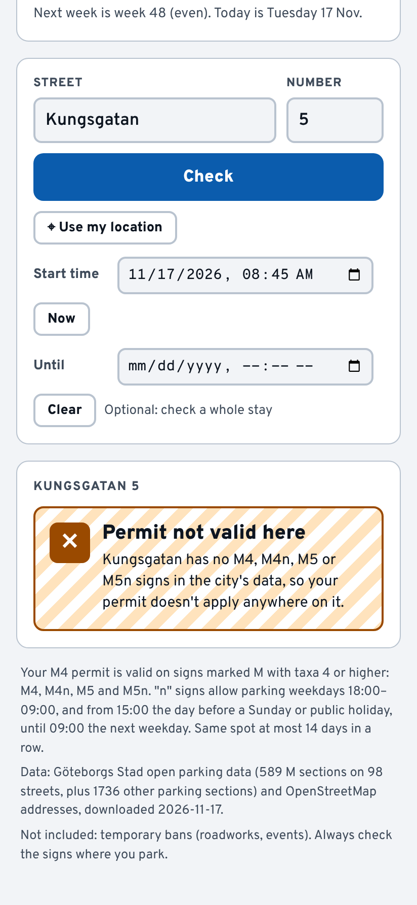
Kungsgatan has no M section. The app shows "Permit not valid here".
- 1 Permit not valid
Shows: FR-01.03.003
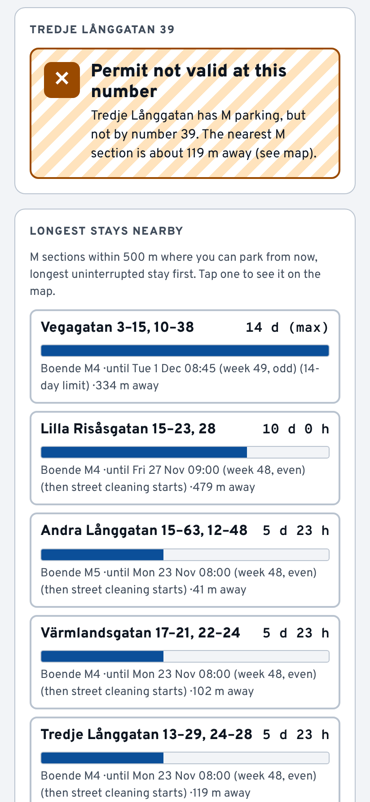
Tredje Långgatan has M sections, but not near number 39. The app gives the distance to the nearest M section.
- 1 Distance to nearest M section
Shows: FR-01.03.005, FR-01.03.006
2.1.4 FE-01.04 Side of the street
The app knows which side of the street the house number is on, and checks that side first.
The two sides of a street can have different signs. For example, one side can have paid parking and the other side residential parking. The app checks the side of the house number first. If the permit is not valid on that side, the app tells the user what parking is there. It also shows the M section across the street, so the user can cross and park there.
| ID | Requirement | Priority | Verification | Status | Source |
|---|---|---|---|---|---|
| FR-01.04.001 | The app shall find the side of the street of the house number from the street centre line. | Must | Test | ✓ Implemented | U5 |
| FR-01.04.002 | The app shall use M sections on the side of the house number before M sections on the other side. | Must | Test | ✓ Implemented | U5 |
| FR-01.04.003 | If only the other side has an M section, the app shall show 'Not valid on your side' and the M section across the street. | Must | Test | ✓ Implemented | U5 |
| FR-01.04.004 | If the side of the house number has other parking, the app shall name it. Example: 'Taxa A paid'. | Should | Test | ✓ Implemented | U5 |
Screens
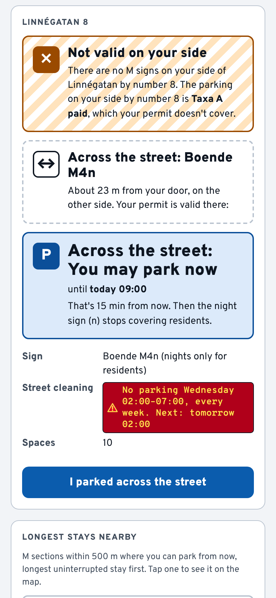
Linnégatan 8 has paid parking on its side. The app names it and shows the M section across the street.
- 1 Not valid on your side
- 2 Section across the street
- 3 Result for that section
Shows: FR-01.04.001, FR-01.04.002, FR-01.04.003, FR-01.04.004
2.2 EP-02 Time rules engine
Goal. The app calculates when the permit allows parking in an M section.
2.2.1 FE-02.01 Night signs
Night signs allow residents to park only at night, and on Sundays and public holidays.
Many M sections in central Göteborg have night signs. On these sections, residents can park only in the evening, at night and on holidays. The user does not need to remember the hours or which days are holidays. The app applies the rules to the start time and tells the user when the night period ends. This prevents a parking fine on a weekday morning.
| ID | Requirement | Priority | Verification | Status | Source |
|---|---|---|---|---|---|
| FR-02.01.001 | On a night sign, the app shall allow parking on weekdays from 18:00 until 09:00 the next day. | Must | Test | ✓ Implemented | R1 |
| FR-02.01.002 | On a night sign, the app shall allow parking from 15:00 on the day before a Sunday or a public holiday. | Must | Test | ✓ Implemented | R1 |
| FR-02.01.003 | On a night sign, the app shall allow parking all day on Sundays and public holidays. | Must | Test | ✓ Implemented | R1 |
| FR-02.01.004 | The app shall calculate the Swedish public holidays for each year, including the holidays with dates that change every year. | Must | Test | ✓ Implemented | R1 |
| FR-02.01.005 | The app shall treat Midsummer Eve, Christmas Eve and New Year's Eve as days before a holiday, not as holidays. | Should | Test | ✓ Implemented | D1 |
| FR-02.01.006 | On a sign without n, the app shall allow parking at all hours, except during street cleaning. | Must | Test | ✓ Implemented | R1 |
Screens
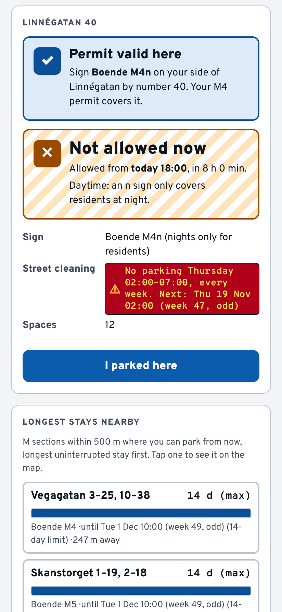
At 10:00 on a Tuesday, the night sign M4n does not allow parking. Parking is allowed again from 18:00.
- 1 Not allowed now
- 2 Allowed from 18:00
Shows: FR-02.01.001
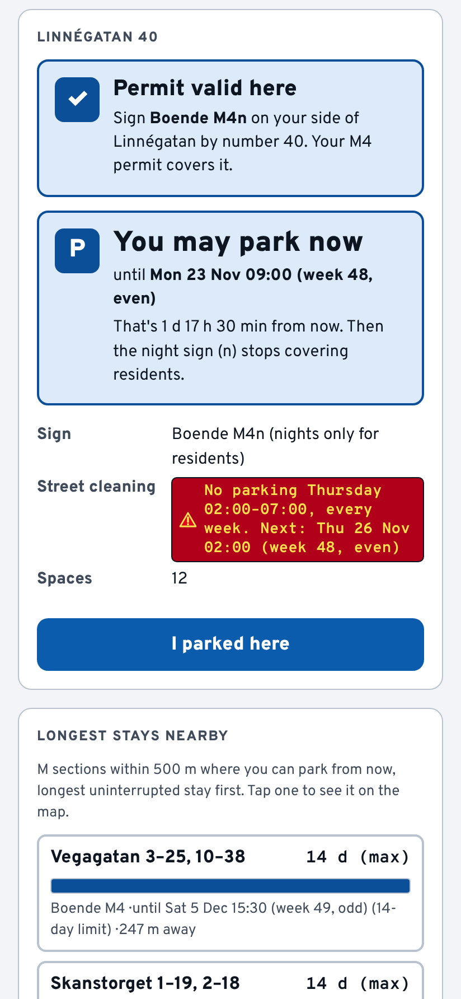
At 15:30 on a Saturday, the night sign allows parking. The day before a Sunday, the night period starts at 15:00.
- 1 Allowed from 15:00
Shows: FR-02.01.002, FR-02.01.003
2.2.2 FE-02.02 Street cleaning
The app applies the street cleaning rules of each M section.
Street cleaning is the most common reason for a parking fine on a residential street. Each section has its own weekday, hours, week type and season. The app applies these rules to the start time. The user sees if street cleaning stops parking, and when it starts or ends. The user does not need to read the small cleaning sign or know the week number.
| ID | Requirement | Priority | Verification | Status | Source |
|---|---|---|---|---|---|
| FR-02.02.001 | The app shall not allow parking in an M section during its street cleaning hours. | Must | Test | ✓ Implemented | R1 |
| FR-02.02.002 | The app shall apply the weekday, the start time and the end time of each street cleaning rule. | Must | Test | ✓ Implemented | C1 |
| FR-02.02.003 | The app shall apply a street cleaning rule only in the week type of the rule: odd weeks, even weeks or every week. | Must | Test | ✓ Implemented | C1 |
| FR-02.02.004 | The app shall use ISO 8601 week numbers to find the week type. | Must | Test | ✓ Implemented | C1 |
| FR-02.02.005 | The app shall apply a street cleaning rule only in its season, for example from 15 March to 30 April. | Must | Test | ✓ Implemented | C1 |
| FR-02.02.006 | If the cleaning data has no rule for an M section, the app shall read the rule from the sign text in the parking data. | Should | Test | ✓ Implemented | C1 |
| FR-02.02.007 | If an M section has no street cleaning rule, the app shall show 'No cleaning registered'. | Must | Test | ✓ Implemented | C1 |
Screens
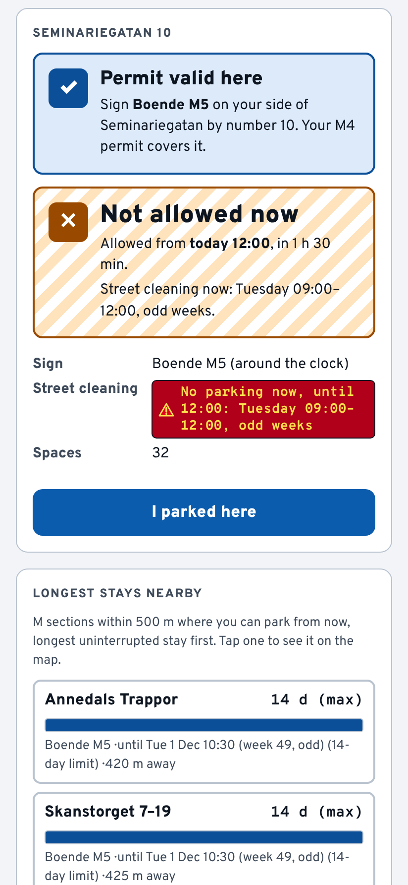
Seminariegatan 10 has street cleaning on Tuesdays 09:00–12:00 in odd weeks. Week 47 is odd, so parking is not allowed.
- 1 Not allowed now
- 2 Cleaning rule
Shows: FR-02.02.001, FR-02.02.002, FR-02.02.003, FR-02.02.004
2.2.3 FE-02.03 14-day limit
A car can stay in the same place for 14 days at most.
The rules allow a car to stay in the same place for 14 days at most. A user who does not use the car often can forget how long it stayed in one place. The app includes the limit in every result, in the stay check and in the My car card. The user knows the last day before the car must move.
| ID | Requirement | Priority | Verification | Status | Source |
|---|---|---|---|---|---|
| FR-02.03.001 | The app shall not allow one stay in the same place for more than 14 days. | Must | Test | ✓ Implemented | R1 |
Screens
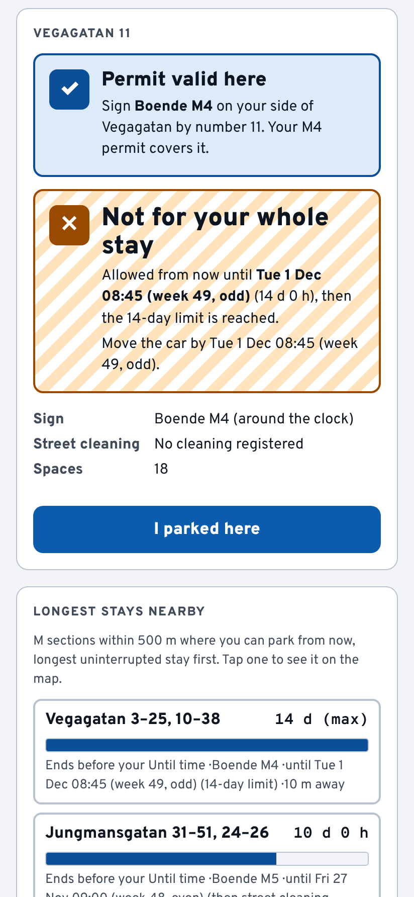
The user asks for a stay of 17 days. The app stops the stay after 14 days and tells the user to move the car.
- 1 14-day limit reached
Shows: FR-02.03.001
2.2.4 FE-02.04 Next change
The app finds when parking becomes allowed or stops being allowed.
The user wants to know how long the permit allows parking, or when it starts to allow parking. The app looks ahead in steps of 15 minutes and finds the next change of status. The result then gives an exact end time or start time, and the reason. This feature works in the background of the result, the suggestions and the My car card.
| ID | Requirement | Priority | Verification | Status | Source |
|---|---|---|---|---|---|
| FR-02.04.001 | The app shall calculate the next change of the parking status in steps of 15 minutes. | Must | Test | ✓ Implemented | D1 |
| FR-02.04.002 | The app shall look 15 days ahead for the next change. | Must | Test | ✓ Implemented | D1 |
Screens
No user screens. See the chapters Architecture and Data pipeline.
2.3 EP-03 Start time and stay check
Goal. The user checks one moment or a full stay, now or in the future.
2.3.1 FE-03.01 Result for one moment
The app shows if the user can park at the start time, and for how long.
This is the main answer of the app. The user wants to know if the car can stay here now, and for how long. The app gives a clear yes or no first, then the time of the next change and the reason. The user can then decide to park, to move the car later, or to find another place.
| ID | Requirement | Priority | Verification | Status | Source |
|---|---|---|---|---|---|
| FR-03.01.001 | The app shall show if the permit allows parking at the start time. | Must | Test | ✓ Implemented | U2 |
| FR-03.01.002 | If the permit allows parking, the app shall show when the permit stops allowing parking, and the reason. | Must | Test | ✓ Implemented | U2 |
| FR-03.01.003 | If the permit does not allow parking, the app shall show when parking becomes allowed, and the reason. | Must | Test | ✓ Implemented | U2 |
| FR-03.01.004 | The app shall show the time to the next change in days, hours and minutes. | Should | Test | ✓ Implemented | D1 |
| FR-03.01.005 | For a date that is not today or tomorrow, the app shall show the weekday, the date, the week number and the week type. | Should | Test | ✓ Implemented | U4 |
Screens
The app answers yes first. Then it gives the end time, the time left and the reason: street cleaning on Wednesday.
- 1 Yes or no
- 2 End time
- 3 Reason
Shows: FR-03.01.001, FR-03.01.002, FR-03.01.004
2.3.2 FE-03.02 Start time
The user can check the current time or a different time.
The user often plans ahead, for example for the evening or for the next morning. The user selects a date and time, and the app checks that moment instead of the current time. The words in the result change from now to at the start time, so the user does not mix them. The Now button returns to the current time.
| ID | Requirement | Priority | Verification | Status | Source |
|---|---|---|---|---|---|
| FR-03.02.001 | The app shall use the current time as the start time when the app starts. | Must | Test | ✓ Implemented | D1 |
| FR-03.02.002 | The app shall let the user select a different start date and start time. | Must | Test | ✓ Implemented | U6 |
| FR-03.02.003 | The Now button shall set the start time to the current time. | Must | Test | ✓ Implemented | U6 |
| FR-03.02.004 | The app shall use the word 'now' only when the start time is the current time. | Must | Test | ✓ Implemented | U6 |
| FR-03.02.005 | When the user selects a start time, the app shall use the words 'at the start time' and show that time. | Must | Test | ✓ Implemented | U6 |
| FR-03.02.006 | The words 'today' and 'tomorrow' shall always refer to the current date, not to the start date. | Must | Test | ✓ Implemented | U6 |
| FR-03.02.007 | When the start time is the current time, the app shall calculate the result again every minute. | Should | Test | ✓ Implemented | D1 |
Screens
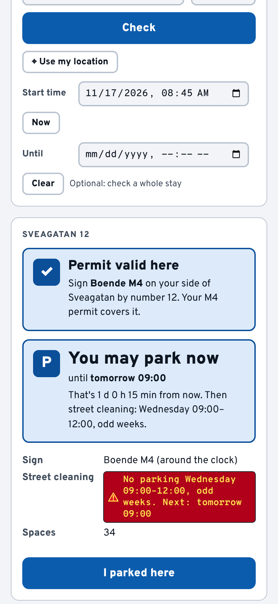
The start time shows the current time. The user can select another date and time, or tap Now.
- 1 Start time
- 2 Now
Shows: FR-03.02.001, FR-03.02.002, FR-03.02.003
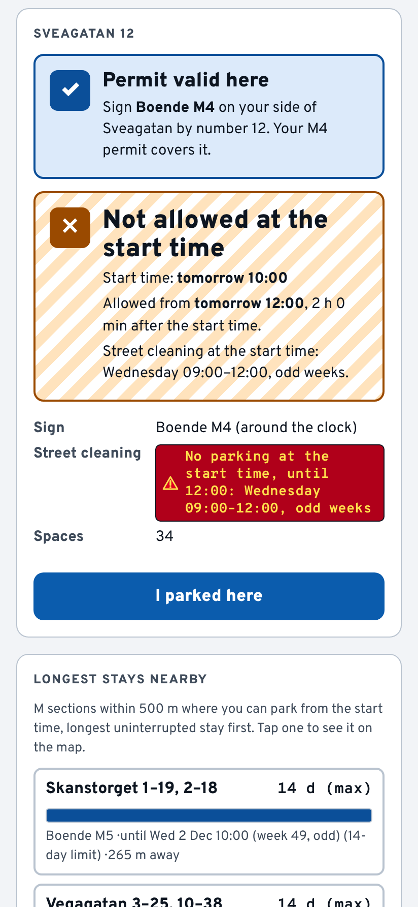
For Wednesday 10:00, the result says "at the start time", not "now". It shows the start time.
- 1 At the start time
- 2 Start time shown
Shows: FR-03.02.004, FR-03.02.005, FR-03.02.006
2.3.3 FE-03.03 Until time
The user enters an end time. The app checks the full stay.
The user wants to park for a known period, for example from Friday evening until Monday morning. The user enters the until time, and the app checks the full period, not only the start. If the period is not allowed, the app tells the user when to move the car and why. The user can plan the stay before the user parks.
| ID | Requirement | Priority | Verification | Status | Source |
|---|---|---|---|---|---|
| FR-03.03.001 | The app shall let the user enter an until time. The until time is optional. | Must | Test | ✓ Implemented | U7 |
| FR-03.03.002 | If the until time is empty, the app shall check only the start time. | Must | Test | ✓ Implemented | U7 |
| FR-03.03.003 | If the until time is not later than the start time, the app shall show an error message. | Must | Test | ✓ Implemented | U7 |
| FR-03.03.004 | If the permit allows parking for the full stay, the app shall show 'Your whole stay is allowed' and the latest possible end time. | Must | Test | ✓ Implemented | U7 |
| FR-03.03.005 | If the permit does not allow parking for the full stay, the app shall show when to move the car, and the reason. | Must | Test | ✓ Implemented | U7 |
| FR-03.03.006 | After a break, the app shall show when the permit allows parking again. | Should | Test | ✓ Implemented | U7 |
| FR-03.03.007 | The Clear button shall delete the until time. | Should | Test | ✓ Implemented | U7 |
Screens
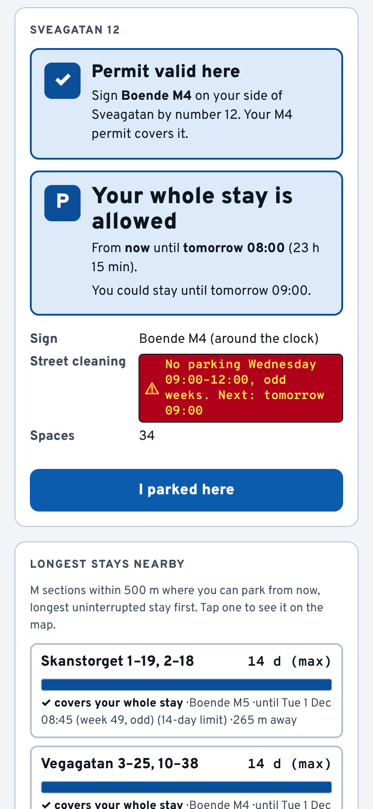
The user enters Until Wednesday 08:00. The whole stay is allowed. The app also shows the latest possible end.
- 1 Whole stay allowed
- 2 Latest end
Shows: FR-03.03.001, FR-03.03.004
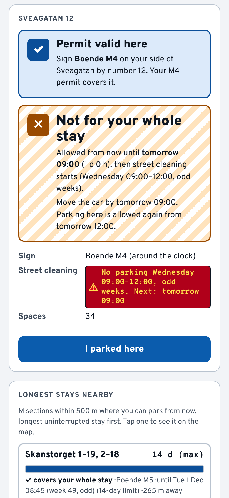
With Until Wednesday 18:00, street cleaning interrupts the stay. The app says when to move the car and when parking is allowed again.
- 1 Not for your whole stay
- 2 Move by, allowed again
Shows: FR-03.03.005, FR-03.03.006
2.4 EP-04 Week and cleaning awareness
Goal. The user always knows the week type, and sees street cleaning before it starts.
2.4.1 FE-04.01 Week banner
The top of the app shows the week number and the week type.
Many street cleaning rules apply only in odd weeks or only in even weeks. Most people do not know the current week number. The app shows the week number and the week type at the top of every screen. The user can then read any cleaning sign on the street correctly.
| ID | Requirement | Priority | Verification | Status | Source |
|---|---|---|---|---|---|
| FR-04.01.001 | The app shall show the current ISO week number at the top of the screen. | Must | Test | ✓ Implemented | U4 |
| FR-04.01.002 | The app shall show the word 'Odd' or 'Even' for the current week. | Must | Test | ✓ Implemented | U4 |
| FR-04.01.003 | The app shall show the number and the week type of the next week. | Should | Test | ✓ Implemented | U4 |
| FR-04.01.004 | The app shall show the current weekday and date. | Could | Test | ✓ Implemented | D1 |
Screens
The top of the app shows week 47 and the words "Odd week". It also shows the next week and the date.
- 1 Week number
- 2 Week type
- 3 Next week and date
Shows: FR-04.01.001, FR-04.01.002, FR-04.01.003, FR-04.01.004
2.4.2 FE-04.02 Cleaning labels
Labels on the map and in the result show the street cleaning rules.
The user needs to see quickly which street cleaning is near in time. Red labels with a warning triangle show street cleaning now or in the next 7 days, with the date. White dashed labels show rules that do not apply soon. The user can then ignore them for now. The labels use text and shapes, so the user does not depend on colour.
| ID | Requirement | Priority | Verification | Status | Source |
|---|---|---|---|---|---|
| FR-04.02.001 | For street cleaning at the start time or in the next 7 days, the app shall show a red label. The label shall have yellow text and a warning triangle. | Must | Inspection | ✓ Implemented | U6 |
| FR-04.02.002 | The red label shall start with 'No parking' and show the weekday, the hours, the week type and the next date. | Must | Test | ✓ Implemented | U6 |
| FR-04.02.003 | During street cleaning, the red label shall show the end time of the street cleaning. | Must | Test | ✓ Implemented | U6 |
| FR-04.02.004 | For a street cleaning rule that does not apply in the next 7 days, the app shall show a white label with a dashed border. | Must | Inspection | ✓ Implemented | U6 |
| FR-04.02.005 | The white label shall show the next date of street cleaning, or the words 'out of season'. | Must | Test | ✓ Implemented | U6 |
| FR-04.02.006 | Each street cleaning label shall show the week type: 'odd wks', 'even wks' or 'every week'. | Must | Test | ✓ Implemented | U4 |
| FR-04.02.007 | Each street cleaning label shall show the season when the rule does not apply all year. | Should | Test | ✓ Implemented | U6 |
| FR-04.02.008 | The result card shall use the same two label types as the map. | Should | Inspection | ✓ Implemented | U6 |
Screens
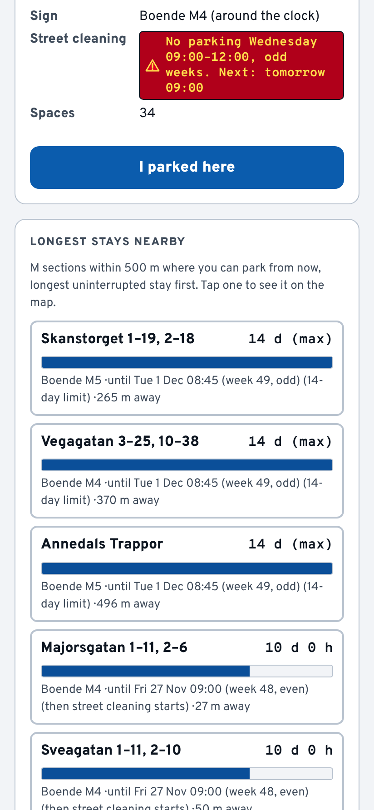
Street cleaning on Wednesday is less than 7 days away. The result shows a red label with yellow text, the rule and the next date.
- 1 Red warning label
Shows: FR-04.02.001, FR-04.02.002, FR-04.02.006, FR-04.02.008

On the map, red labels show cleaning within 7 days. White dashed labels show rules that do not apply soon.
- 1 Red and dashed labels
Shows: FR-04.02.001, FR-04.02.004, FR-04.02.005
2.5 EP-05 Map
Goal. The user sees the parking sections around the address on a real street map.
2.5.1 FE-05.01 Street layout
The map shows the real streets around the address, to scale.
The user needs to see the place in its real surroundings. The map shows the real streets, the street names and a scale. The user can find the house number, the nearest crossing and the walking distance to another section.
| ID | Requirement | Priority | Verification | Status | Source |
|---|---|---|---|---|---|
| FR-05.01.001 | The app shall show a map of the streets around the address, to scale, with north at the top. | Must | Inspection | ✓ Implemented | U5 |
| FR-05.01.002 | The map shall show the street names. | Must | Inspection | ✓ Implemented | U5 |
| FR-05.01.003 | The map shall show a scale bar that changes with the zoom level. | Should | Inspection | ✓ Implemented | D1 |
| FR-05.01.004 | The map shall show the address as a dot with the house number. The legend shall call the dot 'Parking place'. | Must | Inspection | ✓ Implemented | U6 |
Screens
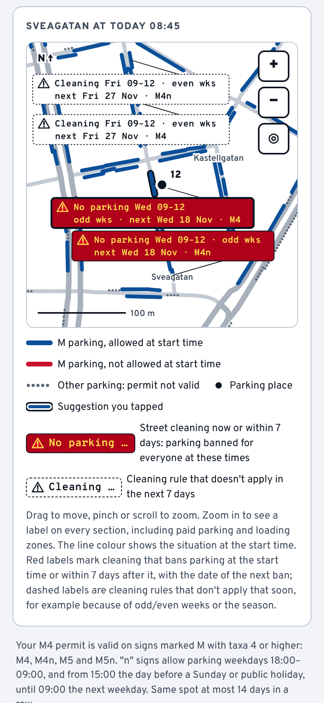
The map shows the real streets with names, north at the top and a scale bar. The dot is the parking place.
- 1 North
- 2 Scale bar
Shows: FR-05.01.001, FR-05.01.002, FR-05.01.003, FR-05.01.004
2.5.2 FE-05.02 Parking sections on the map
The map shows each M section in its real position, coloured for the start time.
The user wants to see all M sections near the address, not only the section at the house number. The map shows each section in its real place. Blue lines show where the permit allows parking at the start time. Red lines show where it does not. Grey dotted lines show other parking where the permit is not valid.
| ID | Requirement | Priority | Verification | Status | Source |
|---|---|---|---|---|---|
| FR-05.02.001 | The map shall show each M section in its real position. | Must | Inspection | ✓ Implemented | U5 |
| FR-05.02.002 | The map shall show M sections that allow parking at the start time as solid blue lines. | Must | Test | ✓ Implemented | U6 |
| FR-05.02.003 | The map shall show M sections that do not allow parking at the start time as solid red lines. | Must | Test | ✓ Implemented | U6 |
| FR-05.02.004 | The map shall show other parking as grey dotted lines. Other parking is paid parking, loading zones, motorcycle parking and disabled parking. | Should | Inspection | ✓ Implemented | U5 |
| FR-05.02.005 | The map shall show the M section that the result uses with a black outline. | Should | Inspection | ✓ Implemented | D1 |
Screens

Blue lines allow parking at the start time. Red lines do not. Grey dotted lines are other parking. A black outline marks the section that the result uses.
- 1 Map lines
Shows: FR-05.02.001, FR-05.02.002, FR-05.02.003, FR-05.02.004, FR-05.02.005
2.5.3 FE-05.03 Map labels
Labels on the map give the rules of each section.
Lines on a map do not tell the user the rules. Labels on the map give the street cleaning day, the hours, the week type and the sign of each section. At the first zoom level, the map labels the street of the address. When the user zooms in, the map labels every section in view.
| ID | Requirement | Priority | Verification | Status | Source |
|---|---|---|---|---|---|
| FR-05.03.001 | At the first zoom level, the map shall show one label for each different rule on the street of the address. | Must | Inspection | ✓ Implemented | U4 |
| FR-05.03.002 | When the user zooms in, the map shall show a label for each M section in view. | Should | Inspection | ✓ Implemented | U5 |
| FR-05.03.003 | A label shall not cover another label, the address dot, the scale bar or the zoom buttons. | Must | Inspection | ✓ Implemented | D1 |
| FR-05.03.004 | On a narrow screen, the map shall show a long label on two lines. | Must | Inspection | ✓ Implemented | D1 |
| FR-05.03.005 | At a high zoom level, the map shall label other parking with its type and the words 'not valid'. | Could | Inspection | ✓ Implemented | U5 |
| FR-05.03.006 | Each label shall have a line to its parking section. | Must | Inspection | ✓ Implemented | D1 |
Screens

The user zooms in. Each M section in view gets its own label with a line to the section.
- 1 Zoom in
Shows: FR-05.03.002, FR-05.03.003, FR-05.03.006
2.5.4 FE-05.04 Zoom and move
The user changes the area that the map shows.
The user wants to look at nearby streets, or see the details of a crowded place. The user moves and zooms the map with the fingers or the buttons. The ◎ button returns the map to the parking place.
| ID | Requirement | Priority | Verification | Status | Source |
|---|---|---|---|---|---|
| FR-05.04.001 | The app shall let the user zoom the map with two fingers, with the mouse wheel and with the + and − buttons. | Must | Test | ✓ Implemented | U5 |
| FR-05.04.002 | The app shall let the user move the map with one finger or with the mouse. | Must | Test | ✓ Implemented | U5 |
| FR-05.04.003 | The ◎ button shall move the map back to the parking place. | Should | Test | ✓ Implemented | U6 |
Screens
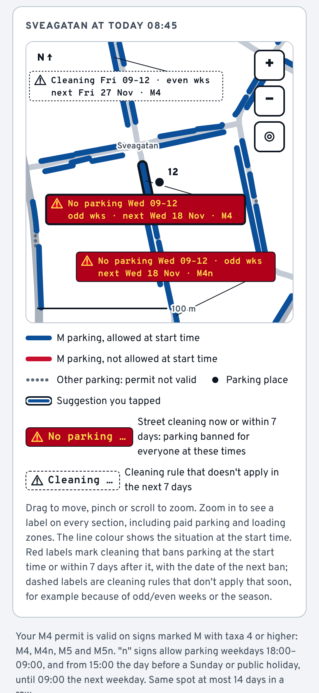
The user zooms with two fingers or the + and − buttons, and moves the map with one finger. The ◎ button returns to the parking place.
- 1 +
- 2 −
- 3 Back to parking place
Shows: FR-05.04.001, FR-05.04.002, FR-05.04.003
2.5.5 FE-05.05 Legend
The legend explains every symbol on the map.
A user who sees the map for the first time needs to know what each symbol means. The legend explains each line, dot and label type in words. It also tells the user that the colours apply to the start time.
| ID | Requirement | Priority | Verification | Status | Source |
|---|---|---|---|---|---|
| FR-05.05.001 | The app shall show a legend below the map for each line type, dot and label type. | Must | Inspection | ✓ Implemented | U6 |
| FR-05.05.002 | The legend shall use the words 'allowed at start time' and 'not allowed at start time'. | Must | Inspection | ✓ Implemented | U6 |
Screens
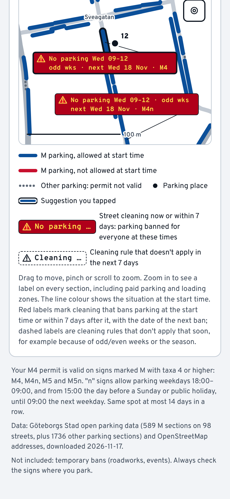
The legend below the map explains each line, dot and label type in words.
- 1 Legend
Shows: FR-05.05.001, FR-05.05.002
2.6 EP-06 Longest stays nearby
Goal. The user finds M sections near the address where the car can stay longest.
2.6.1 FE-06.01 Suggestion list
A ranked list of M sections near the address, with the stay length as a bar.
Often a better place is a short walk away. For example, the user can stay 14 days instead of until the next street cleaning. The app lists the M sections near the address where the user can park at the start time. The list shows the longest stays first, as bars. The user can compare the options at a glance and choose a place for a long stay.
| ID | Requirement | Priority | Verification | Status | Source |
|---|---|---|---|---|---|
| FR-06.01.001 | The app shall list the M sections within 500 metres where the permit allows parking at the start time. | Must | Test | ✓ Implemented | U7 |
| FR-06.01.002 | The app shall sort the list by the longest stay without a break first, then by distance. | Must | Test | ✓ Implemented | U7 |
| FR-06.01.003 | The app shall show 7 suggestions or fewer. | Should | Test | ✓ Implemented | D1 |
| FR-06.01.004 | The app shall show M sections on one street with the same rules and the same stay as one suggestion. | Should | Test | ✓ Implemented | D1 |
| FR-06.01.005 | Each suggestion shall show the street, the house numbers, the stay length, the sign, the end time, the reason and the distance. | Must | Test | ✓ Implemented | U7 |
| FR-06.01.006 | Each suggestion shall show the stay length as a horizontal bar. A full bar is 14 days. | Must | Inspection | ✓ Implemented | U7 |
| FR-06.01.007 | If the user entered an until time, each suggestion shall show if it covers the full stay. | Should | Test | ✓ Implemented | U7 |
Screens
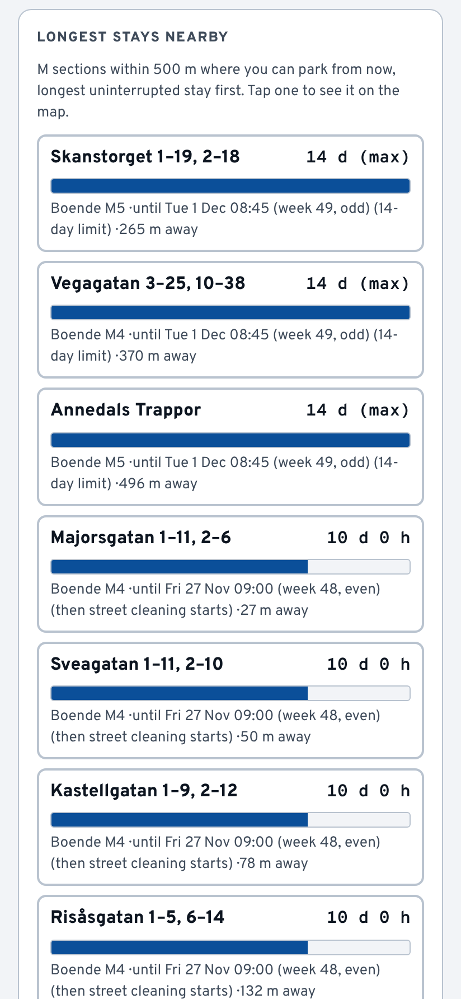
The list shows M sections within 500 m, longest stay first. Each bar shows the stay, where a full bar is 14 days.
- 1 Street and numbers
- 2 Stay length
- 3 Bar
- 4 Sign, end, distance
Shows: FR-06.01.001, FR-06.01.002, FR-06.01.005, FR-06.01.006
2.6.2 FE-06.02 Show a suggestion on the map
The user taps a suggestion to see where it is.
The user sees a good suggestion and wants to know where it is. The user taps the suggestion, and the map moves to it and marks it. The user can then walk or drive to the section.
| ID | Requirement | Priority | Verification | Status | Source |
|---|---|---|---|---|---|
| FR-06.02.001 | When the user taps a suggestion, the map shall move to the suggestion and show it with a black and white outline. | Must | Test | ✓ Implemented | U7 |
| FR-06.02.002 | When the user taps a suggestion, the app shall scroll to the map. | Should | Test | ✓ Implemented | U7 |
Screens
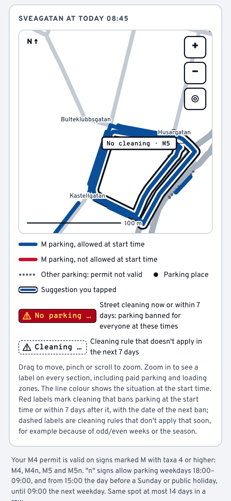
The user taps a suggestion. The app scrolls to the map, moves the map to the section and outlines it in black and white.
- 1 Outlined suggestion
Shows: FR-06.02.001, FR-06.02.002
2.7 EP-07 Location
Goal. The user checks the place where the user stands, without typing.
2.7.1 FE-07.01 Use my location
The app fills in the nearest address from the position of the device.
The user stands next to the car and does not know the house number. The user taps Use my location, and the app fills in the nearest address on an M-zone street. The app then checks that address like a typed address. The app shows the distance and the accuracy, so the user can check that the address is correct.
| ID | Requirement | Priority | Verification | Status | Source |
|---|---|---|---|---|---|
| FR-07.01.001 | The app shall fill in the address from the position of the device when the user taps 'Use my location'. | Must | Test | ◐ Implemented, not verified on device | U8 |
| FR-07.01.002 | The app shall use the nearest address on an M-zone street that is 150 metres or less from the position. | Must | Test | ✓ Implemented | D1 |
| FR-07.01.003 | The app shall show the distance to that address and the accuracy of the position. | Should | Test | ✓ Implemented | D1 |
| FR-07.01.004 | If no M-zone address is 150 metres or less from the position, the app shall tell the user. | Must | Test | ✓ Implemented | D1 |
| FR-07.01.005 | If the user refuses location access, the app shall tell the user where to allow it. | Must | Test | ✓ Implemented | D1 |
Screens
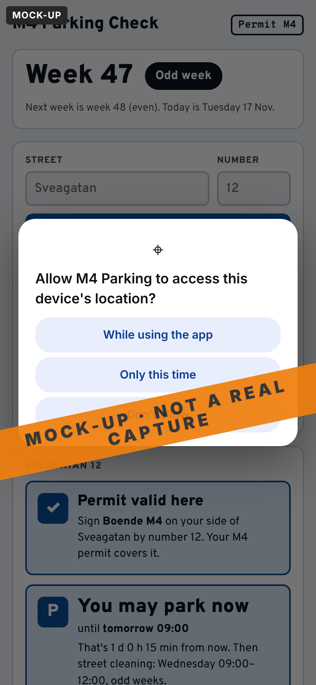
The user taps Use my location for the first time. Android asks for permission. The user allows it.
- 1 Allow
Shows: FR-07.01.001, FR-07.01.005
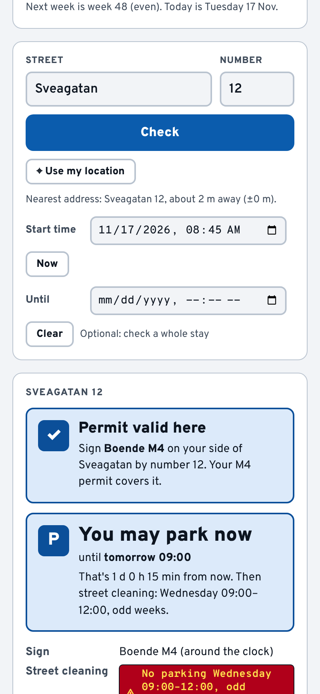
The app fills in the nearest M-zone address, Sveagatan 12, and shows the distance and the accuracy. Then it checks the address.
- 1 Use my location
- 2 Distance and accuracy
- 3 Filled in
Shows: FR-07.01.002, FR-07.01.003
2.8 EP-08 My car and payment
Goal. The app follows the parked car. When the free time ends, the app helps the user to pay or tells the user to move.
2.8.1 FE-08.01 Park the car
The user saves the place of the car.
After the user parks, the user wants the app to remember the car. The user taps I parked here. The app keeps the place and the time, and shows a My car card at the top of the app. When the user moves the car, the user taps I moved the car.
| ID | Requirement | Priority | Verification | Status | Source |
|---|---|---|---|---|---|
| FR-08.01.001 | When the permit is valid at the address, the app shall show an 'I parked here' button. | Must | Test | ✓ Implemented | U9 |
| FR-08.01.002 | When the user taps 'I parked here', the app shall save the M section, the address and the time on the device. | Must | Test | ✓ Implemented | U9 |
| FR-08.01.003 | The app shall show a 'My car' card below the week banner while the app has a saved car. | Must | Test | ✓ Implemented | U9 |
| FR-08.01.004 | The 'I moved the car' button shall delete the saved car and its reminders. | Must | Test | ✓ Implemented | U9 |
Screens
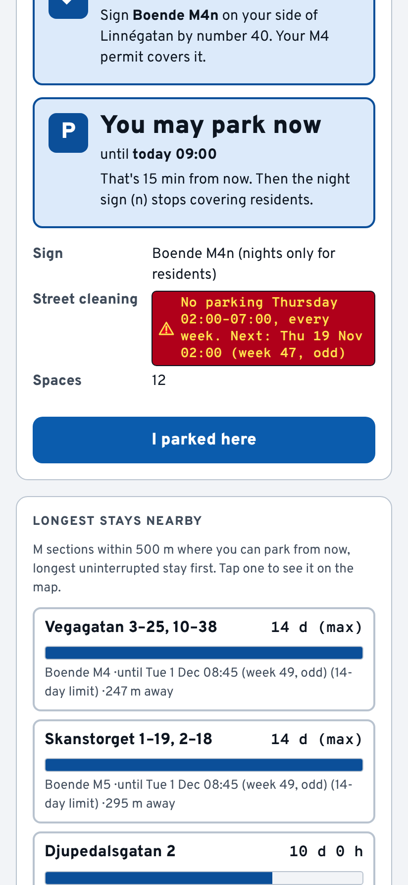
The permit is valid at Linnégatan 40. The user parks and taps "I parked here".
- 1 I parked here
Shows: FR-08.01.001

The app saves the car and shows the My car card below the week banner. "I moved the car" deletes it.
- 1 Saved address
- 2 I moved the car
Shows: FR-08.01.002, FR-08.01.003, FR-08.01.004
2.8.2 FE-08.02 Pay or move
The card shows the free time and what to do when the free time ends.
On a night sign, free parking ends in the morning. The user can pay for the day if the section has paid parking, instead of moving the car. The My car card tells the user when the free time ends and what the next step is: pay or move. For paid parking, it shows the price and the time when payment can stop. For street cleaning and the 14-day limit, it tells the user to move the car.
| ID | Requirement | Priority | Verification | Status | Source |
|---|---|---|---|---|---|
| FR-08.02.001 | The card shall show when the free time ends. | Must | Test | ✓ Implemented | U9 |
| FR-08.02.002 | The card shall show the next step when the free time ends: pay or move the car. | Must | Test | ✓ Implemented | U9 |
| FR-08.02.003 | The app shall offer payment only if the city data shows paid parking in the same M section. | Must | Test | ✓ Implemented | U9 |
| FR-08.02.004 | The app shall not offer payment for street cleaning. The card shall tell the user to move the car. | Must | Test | ✓ Implemented | R1 |
| FR-08.02.005 | The app shall not offer payment after the 14-day limit. The card shall tell the user to move the car. | Must | Test | ✓ Implemented | R1 |
| FR-08.02.006 | The app shall limit the paid time to the maximum parking time of the paid parking. | Must | Test | ✓ Implemented | C1 |
| FR-08.02.007 | The card shall show the taxa, the price text and the maximum parking time from the city data. | Must | Test | ✓ Implemented | C1 |
| FR-08.02.008 | The card shall show when the user can stop the payment, and the reason. | Must | Test | ✓ Implemented | U9 |
| FR-08.02.009 | The card shall show an estimated cost at the city price, and tell the user that the payment app can add a fee. | Should | Test | ✓ Implemented | D1 |
Screens
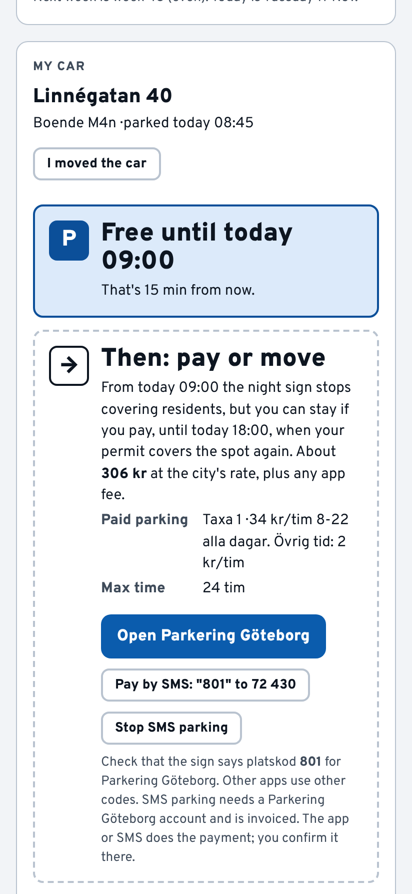
Free time ends at 09:00. Then the user can pay Taxa 1 until 18:00, when the night sign covers the place again.
- 1 Free until
- 2 Pay or move
- 3 Taxa, price, max time
Shows: FR-08.02.001, FR-08.02.002, FR-08.02.003, FR-08.02.006, FR-08.02.007, FR-08.02.008, FR-08.02.009
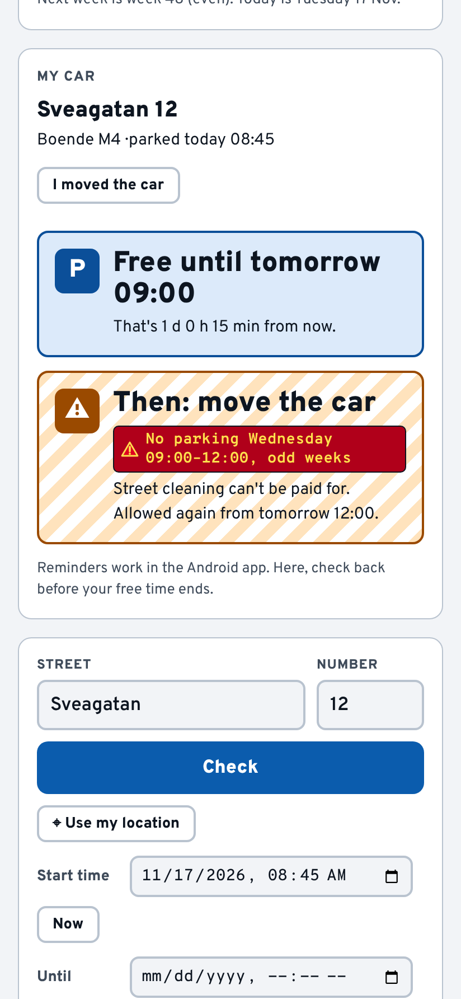
At Sveagatan 12, street cleaning ends the free time. Street cleaning cannot be paid for, so the card tells the user to move the car.
- 1 Move the car
- 2 Cleaning rule
Shows: FR-08.02.004
2.8.3 FE-08.03 Pay with the Parkering Göteborg app
The app opens the payment app of the user.
The user who wants to pay uses the Parkering Göteborg app. The My car card opens that app with one tap, so the user does not have to search for it. The user starts and approves the payment in that app. M4 Parking Check never handles money.
| ID | Requirement | Priority | Verification | Status | Source |
|---|---|---|---|---|---|
| FR-08.03.001 | The 'Open Parkering Göteborg' button shall open the Parkering Göteborg app. | Must | Test | ◐ Implemented, not verified on device | U9 |
| FR-08.03.002 | If the Parkering Göteborg app is not installed, the button shall open the app store page of the Parkering Göteborg app. | Should | Test | ◐ Implemented, not verified on device | D1 |
| FR-08.03.003 | The app shall not make a payment. The user shall approve each payment in the Parkering Göteborg app or in the SMS app. | Must | Inspection | ✓ Implemented | D1 |
Screens
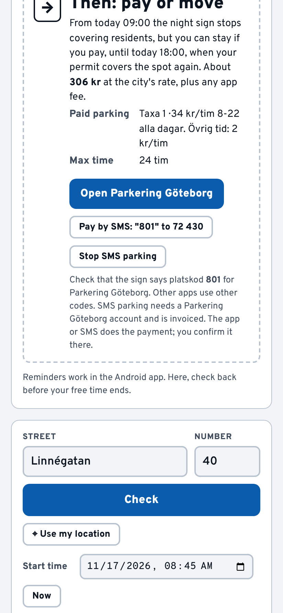
The card has three buttons. The user taps "Open Parkering Göteborg" to pay in that app.
- 1 Open Parkering Göteborg
- 2 Pay by SMS
- 3 Stop SMS parking
- 4 Check platskod
Shows: FR-08.03.001, FR-08.04.001, FR-08.04.005, FR-08.04.003, FR-08.04.004
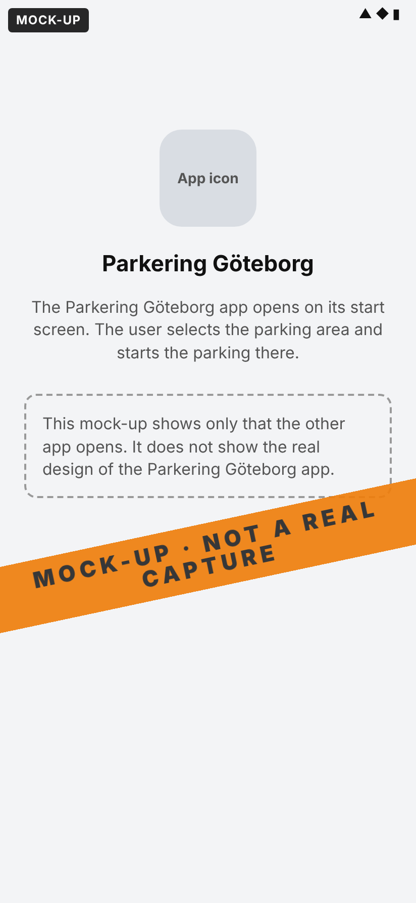
The Parkering Göteborg app opens. The user starts and approves the payment in that app.
Shows: FR-08.03.001, FR-08.03.003
2.8.4 FE-08.04 Pay by SMS
The app prepares an SMS to Parkering Göteborg. The user sends it.
SMS payment is a fallback when the payment app does not work or is not installed. The app prepares an SMS to 72 430 with the correct platskod for the taxa. The user checks the code on the sign and sends the SMS. The user can also stop the payment with the prepared message avsluta.
| ID | Requirement | Priority | Verification | Status | Source |
|---|---|---|---|---|---|
| FR-08.04.001 | The 'Pay by SMS' button shall open the SMS app with the number 72 430 and the platskod as the message. | Must | Test | ◐ Implemented, not verified on device | U9 |
| FR-08.04.002 | The app shall find the platskod from the taxa. Example: Taxa 1 has platskod 801. | Must | Test | ✓ Implemented | P2 |
| FR-08.04.003 | The app shall tell the user to compare the platskod with the platskod on the sign. | Must | Test | ✓ Implemented | P1 |
| FR-08.04.004 | The app shall tell the user that SMS parking needs a Parkering Göteborg account, and that Parkering Göteborg sends an invoice. | Must | Test | ✓ Implemented | P1 |
| FR-08.04.005 | The 'Stop SMS parking' button shall open the SMS app with the number 72 430 and the message 'avsluta'. | Must | Test | ◐ Implemented, not verified on device | P1 |
Screens
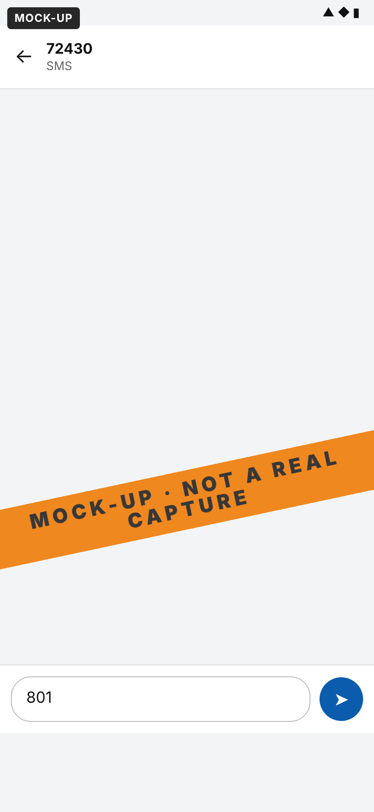
The SMS app opens with the number 72430 and the message 801. The user compares the code with the sign, then taps Send.
- 1 Platskod 801
- 2 Send
Shows: FR-08.04.001, FR-08.04.002
2.8.5 FE-08.05 Reminders
The Android app sends reminders before and when the free time ends.
The user does not watch the app all day. The Android app sends a reminder 15 minutes before the free time ends, and again when it ends. The reminder has buttons to pay directly. A later reminder tells the user to stop the payment when the permit covers the place again.
| ID | Requirement | Priority | Verification | Status | Source |
|---|---|---|---|---|---|
| FR-08.05.001 | The Android app shall send a reminder 15 minutes before the free time ends. | Must | Test | ◐ Implemented, not verified on device | U9 |
| FR-08.05.002 | The Android app shall send a reminder when the free time ends. | Must | Test | ◐ Implemented, not verified on device | U9 |
| FR-08.05.003 | A reminder for paid parking shall have two buttons: 'Open Parkering Göteborg' and 'Pay by SMS'. | Must | Test | ◐ Implemented, not verified on device | U9 |
| FR-08.05.004 | The Android app shall send a reminder to stop the payment when the permit allows free parking again. | Should | Test | ◐ Implemented, not verified on device | D1 |
| FR-08.05.005 | The Android app shall send a reminder 1 hour before the 14-day limit. | Should | Test | ◐ Implemented, not verified on device | R1 |
| FR-08.05.006 | The Android app shall ask for permission to send notifications when the user taps 'I parked here'. | Must | Test | ◐ Implemented, not verified on device | D1 |
| FR-08.05.007 | The Android app shall calculate and schedule the reminders again each time the user opens the app. | Must | Test | ◐ Implemented, not verified on device | D1 |
| FR-08.05.008 | The web app shall tell the user that reminders work only in the Android app. | Must | Test | ✓ Implemented | D1 |
Screens
At 08:45, 15 minutes before free time ends, the Android app shows a reminder with two buttons.
- 1 Reminder
- 2 Open Parkering Göteborg
- 3 Pay by SMS
Shows: FR-08.05.001, FR-08.05.003
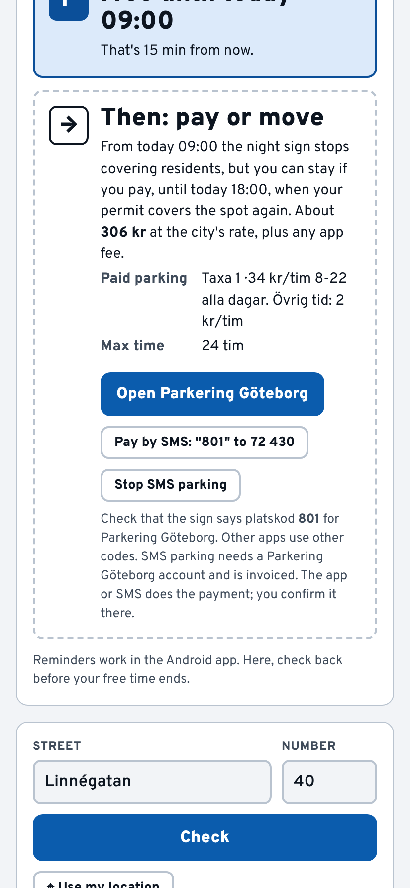
In the web app, the card tells the user that reminders work only in the Android app.
- 1 Reminder note
Shows: FR-08.05.008
2.9 EP-09 Data pipeline
Goal. The street data in the app is correct and stays up to date without manual work.
2.9.1 FE-09.01 City data
The pipeline downloads parking and street cleaning data from Göteborgs Stad.
This feature has no user screens. It gives the app the official parking rules of Göteborgs Stad. The pipeline downloads the residential parking, the street cleaning and the paid parking data. The user can trust that the app uses the rules of the city.
| ID | Requirement | Priority | Verification | Status | Source |
|---|---|---|---|---|---|
| FR-09.01.001 | The pipeline shall download the residential parking sections from the open WFS service of Göteborgs Stad. | Must | Inspection | ✓ Implemented | C1 |
| FR-09.01.002 | The pipeline shall download the street cleaning rules from the same service. | Must | Inspection | ✓ Implemented | C1 |
| FR-09.01.003 | The pipeline shall download the paid, time-limited, loading, motorcycle, disabled and private parking layers near the M zone. | Should | Inspection | ✓ Implemented | C1 |
| FR-09.01.004 | The pipeline shall keep only the residential parking sections with zone letter M. | Must | Test | ✓ Implemented | U8 |
| FR-09.01.005 | The pipeline shall convert the coordinates from SWEREF 99 12 00 (EPSG:3007) to WGS 84. | Must | Test | ✓ Implemented | C1 |
Screens
No user screens. See the chapters Architecture and Data pipeline.
2.9.2 FE-09.02 Address and street data
The pipeline downloads house numbers and streets from OpenStreetMap.
This feature has no user screens. The city data has no house numbers. The pipeline downloads the house numbers and the streets from OpenStreetMap. This lets the user search by address and see a real map.
| ID | Requirement | Priority | Verification | Status | Source |
|---|---|---|---|---|---|
| FR-09.02.001 | The pipeline shall download the house numbers of each M-zone street from OpenStreetMap. | Must | Inspection | ✓ Implemented | O1 |
| FR-09.02.002 | The pipeline shall download the street network around the M zone from OpenStreetMap. | Must | Inspection | ✓ Implemented | O1 |
| FR-09.02.003 | The pipeline shall split an address with two numbers, for example '3,5', into two addresses. | Should | Test | ✓ Implemented | D1 |
Screens
No user screens. See the chapters Architecture and Data pipeline.
2.9.3 FE-09.03 Matching
The pipeline joins the rules from different layers to each M section.
This feature has no user screens. The rules for one place come from different data layers. The pipeline joins the street cleaning rules and the paid parking to each M section. The app can then give one complete answer for each place.
| ID | Requirement | Priority | Verification | Status | Source |
|---|---|---|---|---|---|
| FR-09.03.001 | The pipeline shall attach to each M section the street cleaning rules on the same street that are 4 metres or less from it. | Must | Test | ✓ Implemented | D1 |
| FR-09.03.002 | The pipeline shall use street cleaning rules with the same regulation number before other street cleaning rules. | Should | Test | ✓ Implemented | D1 |
| FR-09.03.003 | The pipeline shall attach to each M section the paid parking on the same street that is 4 metres or less from it. | Must | Test | ✓ Implemented | U9 |
| FR-09.03.004 | For paid parking, the pipeline shall keep the taxa, the price text, the maximum parking time and the platskod. | Must | Test | ✓ Implemented | U9 |
Screens
No user screens. See the chapters Architecture and Data pipeline.
2.9.4 FE-09.04 Schedule and publication
GitHub Actions runs the pipeline and publishes the result.
This feature has no user screens. The city changes signs and street cleaning rules during the year. GitHub Actions runs the pipeline every week and publishes the data only if it is complete. The user gets current rules without an app update.
| ID | Requirement | Priority | Verification | Status | Source |
|---|---|---|---|---|---|
| FR-09.04.001 | The pipeline shall download the city data every Monday. | Must | Inspection | ✓ Implemented | U8 |
| FR-09.04.002 | The pipeline shall download the OpenStreetMap data on the first Monday of each month. | Should | Inspection | ✓ Implemented | D1 |
| FR-09.04.003 | The pipeline shall let a maintainer start a refresh by hand, with an option to download the OpenStreetMap data. | Should | Demonstration | ✓ Implemented | D1 |
| FR-09.04.004 | The pipeline shall stop and not publish if the data has fewer than 300 M sections, 1000 addresses or 1000 street lines. | Must | Test | ✓ Implemented | D1 |
| FR-09.04.005 | The pipeline shall publish new data only when the data changed. | Should | Inspection | ✓ Implemented | D1 |
| FR-09.04.006 | The pipeline shall write the download date into the data file. | Must | Test | ✓ Implemented | D1 |
Screens
No user screens. See the chapters Architecture and Data pipeline.
2.9.5 FE-09.05 Data in the app
The app loads the newest data that it can get.
The user often checks parking in the street, where the network can be weak. The app uses the newest data that it can get, and keeps a copy for offline use. The bottom of the screen shows the date of the data, so the user knows its age.
| ID | Requirement | Priority | Verification | Status | Source |
|---|---|---|---|---|---|
| FR-09.05.001 | The app shall show the data date and the number of M sections and streets at the bottom of the screen. | Should | Test | ✓ Implemented | D1 |
| FR-09.05.002 | When the Android app is online, it shall download newer data from the web app. | Must | Test | ◐ Implemented, not verified on device | U8 |
| FR-09.05.003 | When the Android app is offline, it shall use the newest data that it saved. | Must | Test | ◐ Implemented, not verified on device | U8 |
Screens
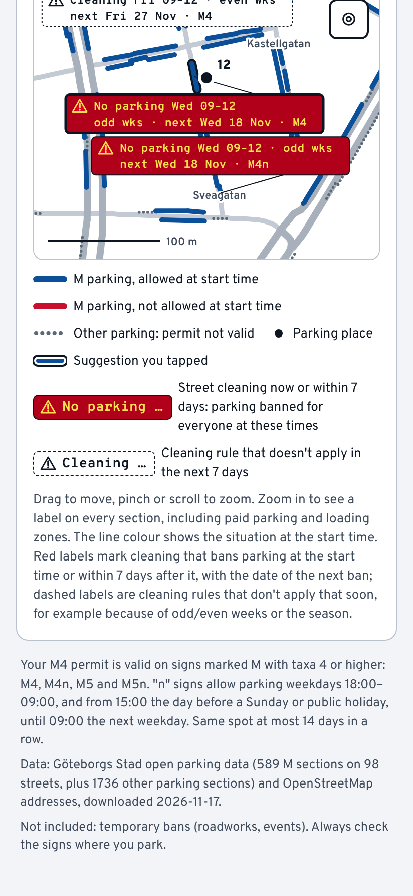
The bottom of the app shows the data sources, the number of M sections and streets, and the download date.
- 1 Data date and counts
Shows: FR-09.05.001
2.10 EP-10 Distribution
Goal. The user installs and updates the app without a store account or a developer account.
2.10.1 FE-10.01 Web app
The app is a website that the user can add to the home screen.
The user opens the web address in Chrome and adds the app to the home screen. The app then starts from an icon like an installed app. It works without a store account and on any phone with a modern browser.
| ID | Requirement | Priority | Verification | Status | Source |
|---|---|---|---|---|---|
| FR-10.01.001 | The web app shall be available on a public HTTPS address without a login. | Must | Demonstration | ✓ Implemented | U8 |
| FR-10.01.002 | The user shall be able to add the web app to the home screen of an Android phone from Chrome. | Must | Demonstration | ✓ Implemented | U8 |
| FR-10.01.003 | The web app shall start without a network after the first visit, with the last data that it loaded. | Should | Test | ✓ Implemented | U8 |
| FR-10.01.004 | The web app shall load the street data from the network before it uses the saved copy. | Must | Test | ✓ Implemented | D1 |
Screens
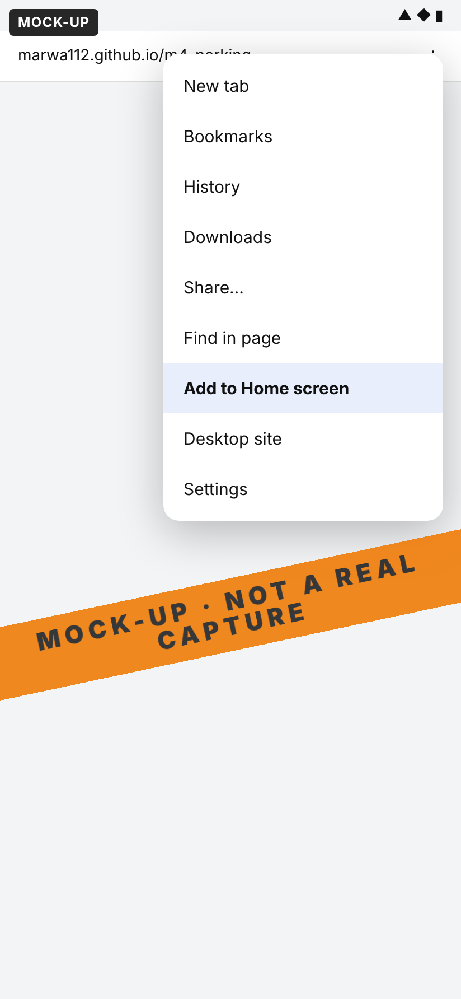
The user opens the web address in Chrome, taps the ⋮ menu and taps "Add to Home screen".
- 1 Menu
- 2 Add to Home screen
Shows: FR-10.01.001, FR-10.01.002
2.10.2 FE-10.02 Android app
GitHub Actions builds the APK and publishes it as a release.
The user who wants reminders installs the Android app. The user downloads the APK file from the release page and installs it. Each new version appears as a new release with installation notes.
| ID | Requirement | Priority | Verification | Status | Source |
|---|---|---|---|---|---|
| FR-10.02.001 | A workflow shall build an Android APK when the app code, the icons or the Android settings change. | Must | Inspection | ✓ Implemented | U8 |
| FR-10.02.002 | The workflow shall publish each APK as a numbered release with installation notes. | Must | Inspection | ✓ Implemented | U8 |
| FR-10.02.003 | The APK shall contain the street data, so that the app works at the first start without a network. | Must | Test | ✓ Implemented | D1 |
| FR-10.02.004 | The APK shall not contain the sales deck. | Could | Inspection | ✓ Implemented | D1 |
| FR-10.02.005 | The Android app shall use the app icon and the start screen of M4 Parking Check, not the default Capacitor images. | Should | Inspection | ✓ Implemented | D1 |
Screens
The user opens the downloaded file m4-parking.apk. Android asks to install M4 Parking. The user taps Install.
- 1 Install
Shows: FR-10.02.002
3 Non-functional requirements
3.1 NFR-ACC Accessibility and colour vision
| ID | Requirement | Priority | Verification | Status | Source |
|---|---|---|---|---|---|
| NFR-ACC-001 | The app shall not use red and green as a pair to show a difference. | Must | Inspection | ✓ Implemented | U3 |
| NFR-ACC-002 | Each colour that shows a meaning shall also have a second sign: a word, an icon, a stripe, a dash or a dot. | Must | Inspection | ✓ Implemented | U3 |
| NFR-ACC-003 | Text shall have a contrast ratio of 4.5:1 or more against its background, as in WCAG 2.2 level AA. | Should | Analysis | ○ Open | U3 |
| NFR-ACC-004 | The app shall follow the light or dark setting of the device. | Should | Inspection | ✓ Implemented | D1 |
| NFR-ACC-005 | Map text shall be 11 pixels or larger on a screen that is 340 pixels wide. | Should | Inspection | ✓ Implemented | D1 |
| NFR-ACC-006 | Each button and input shall show a visible frame when it has the keyboard focus. | Should | Inspection | ✓ Implemented | D1 |
3.2 NFR-USE Usability and wording
| ID | Requirement | Priority | Verification | Status | Source |
|---|---|---|---|---|---|
| NFR-USE-001 | The app shall use English for all text, and the Swedish names for streets and signs. | Must | Inspection | ✓ Implemented | D1 |
| NFR-USE-002 | The app shall show times in the 24-hour format. | Must | Inspection | ✓ Implemented | D1 |
| NFR-USE-003 | The result shall give a yes or no answer before the details. | Should | Inspection | ✓ Implemented | U2 |
3.3 NFR-PERF Performance
| ID | Requirement | Priority | Verification | Status | Source |
|---|---|---|---|---|---|
| NFR-PERF-001 | The app shall show the result 1 second or less after the user taps Check, on a mid-range phone. | Should | Test | ○ Open | D1 |
| NFR-PERF-002 | The street data file shall be smaller than 1 MB. | Should | Inspection | ✓ Implemented | D1 |
| NFR-PERF-003 | The map shall follow the finger without a visible delay when the user zooms or moves it. | Should | Demonstration | ○ Open | D1 |
3.4 NFR-OFF Offline use
| ID | Requirement | Priority | Verification | Status | Source |
|---|---|---|---|---|---|
| NFR-OFF-001 | After the first start, the app shall check addresses without a network connection. | Must | Test | ✓ Implemented | U8 |
| NFR-OFF-002 | Without a network, the app shall use the fonts of the device. | Could | Inspection | ✓ Implemented | D1 |
3.5 NFR-PRIV Privacy
| ID | Requirement | Priority | Verification | Status | Source |
|---|---|---|---|---|---|
| NFR-PRIV-001 | The app shall keep addresses and the saved car only on the device. | Must | Inspection | ✓ Implemented | D1 |
| NFR-PRIV-002 | The app shall not need a user account. | Must | Inspection | ✓ Implemented | D1 |
| NFR-PRIV-003 | The app shall not send the position of the device to a server. | Must | Inspection | ✓ Implemented | D1 |
| NFR-PRIV-004 | The app shall not use tracking or analytics. | Must | Inspection | ✓ Implemented | D1 |
3.6 NFR-SEC Security
| ID | Requirement | Priority | Verification | Status | Source |
|---|---|---|---|---|---|
| NFR-SEC-001 | The repository shall not contain passwords, API keys, access tokens or signing keys. | Must | Inspection | ✓ Implemented | U8 |
| NFR-SEC-002 | The app shall not handle payment card data or make payments. | Must | Inspection | ✓ Implemented | U9 |
| NFR-SEC-003 | A workflow shall use only the temporary token that GitHub gives to each run. | Must | Inspection | ✓ Implemented | U8 |
| NFR-SEC-004 | If the project uses a permanent signing key, the key shall be stored in GitHub Secrets. | Should | Inspection | ○ Open | D1 |
3.7 NFR-DATA Data quality
| ID | Requirement | Priority | Verification | Status | Source |
|---|---|---|---|---|---|
| NFR-DATA-001 | The app shall take the parking rules only from the open data of Göteborgs Stad. | Must | Inspection | ✓ Implemented | C1 |
| NFR-DATA-002 | After a successful weekly refresh, the city data shall be 7 days old or less. | Should | Inspection | ✓ Implemented | U8 |
| NFR-DATA-003 | The app shall tell the user that temporary bans are not in the data, and that the signs on the street apply. | Must | Inspection | ✓ Implemented | R1 |
| NFR-DATA-004 | The project shall compare the platskod list with an official Parkering Göteborg source. | Should | Analysis | ○ Open | P2 |
3.8 NFR-COMP Compatibility
| ID | Requirement | Priority | Verification | Status | Source |
|---|---|---|---|---|---|
| NFR-COMP-001 | The Android app shall run on Android 5.1 (API level 22) or later. | Must | Test | ◐ Implemented, not verified on device | U8 |
| NFR-COMP-002 | The web app shall work in the current versions of Chrome, Firefox, Safari and Edge. | Should | Test | ○ Open | D1 |
| NFR-COMP-003 | The layout shall work on screens that are 340 pixels wide or wider, without horizontal scrolling. | Must | Test | ✓ Implemented | D1 |
3.9 NFR-MNT Maintainability
| ID | Requirement | Priority | Verification | Status | Source |
|---|---|---|---|---|---|
| NFR-MNT-001 | The repository shall contain all source code, scripts, workflows and this specification. | Must | Inspection | ✓ Implemented | U8 |
| NFR-MNT-002 | The data refresh shall run without manual steps. | Must | Inspection | ✓ Implemented | U8 |
| NFR-MNT-003 | The pipeline scripts shall run with Python 3.12 and the pyproj library. | Should | Inspection | ✓ Implemented | D1 |
3.10 NFR-LEG Licences and credits
| ID | Requirement | Priority | Verification | Status | Source |
|---|---|---|---|---|---|
| NFR-LEG-001 | The app shall credit the OpenStreetMap contributors and name the ODbL licence. | Must | Inspection | ✓ Implemented | O1 |
| NFR-LEG-002 | The app shall credit Göteborgs Stad as the source of the parking data. | Must | Inspection | ✓ Implemented | C1 |
| NFR-LEG-003 | The app shall use the name Parkering Göteborg only to name the payment app, and not use its logo. | Should | Inspection | ✓ Implemented | D1 |
3.11 NFR-VER Versions
| ID | Requirement | Priority | Verification | Status | Source |
|---|---|---|---|---|---|
| NFR-VER-001 | Each change shall make a new version. A change shall not overwrite an earlier version. | Must | Inspection | ✓ Implemented | U10 |
| NFR-VER-002 | Each APK shall have a higher version number than the APK before it. | Must | Inspection | ✓ Implemented | D1 |
| NFR-VER-003 | Before a large change, the project shall keep the earlier state on a named branch. | Should | Inspection | ✓ Implemented | U10 |
| NFR-VER-004 | Each release of the specification and the test matrix shall be a new file with the version number in the file name. | Must | Inspection | ✓ Implemented | U10 |
4 Information architecture
This chapter defines how the app organises its content. New features must follow these rules, so that the app stays one consistent tool. Each rule has an ID (IA-nn). A change to a rule needs a new version of this document.
4.1 IA-01 One screen, fixed regions
The app is one scrolling screen. It has no pages, tabs or menus. The screen has eight regions in a fixed order. The order follows the questions of the user, from "where am I?" to "what is around me?".

spec/diagrams/IA-01-screen-order.mmd| Region | Content | Shown |
|---|---|---|
| R1 Header | App name, permit (M4) | Always |
| R2 Week banner | Week number, odd or even, next week, date | Always |
| R3 My car | Saved car, free time, pay or move | Only when a car is saved |
| R4 Question | Street, number, location, start time, until time | Always |
| R5 Answer | Result cards for one address | After a check |
| R6 Alternatives | Longest stays nearby | After a check |
| R7 Context | Map and legend | After a check |
| R8 Footer | Rules summary, data date, disclaimer | Always |
Rule for new features. Put new content into the region that answers the same question. Do not add a region between R4 and R5. Do not add a new navigation layer. If a feature does not fit a region, update IA-01 first.
4.2 IA-02 Answer first, details after
Each result gives the answer before the explanation. The order in R5 is fixed:
- Is the permit valid here? (Permit valid here / Not valid on your side / Permit not valid here)
- Can I park at the start time? (You may park now / Not allowed now)
- Until when, or from when? (a time, and the time left)
- Why? (the reason: street cleaning, night sign, 14-day limit)
- Details (sign, street cleaning rule, spaces, other sections)
- Action (I parked here)
Rule for new features. A new card in R5 or R3 has a one-line answer as its title. The details follow below the title. An action button comes last.
4.3 IA-03 Content objects
The app works with a small set of content objects. Each object has one name in the interface, and the glossary defines it.

spec/diagrams/IA-02-objects.mmd| Object | Name on screen | Key properties |
|---|---|---|
| Permit | Permit M4 | Zone letter, taxa |
| Address | Street + number, for example Sveagatan 12 | Position, side of street |
| M section | Sign text, for example Boende M4n | Sign, spaces, position |
| Street cleaning rule | No parking Wed 09–12 · odd wks | Weekday, hours, week type, season |
| Paid parking | Taxa 1 | Price, maximum time, platskod |
| Moment | Start time, Until | Live (now) or selected |
| Verdict | You may park now / Not allowed now | End or start time, reason |
| Suggestion | Street + numbers | Stay, end, distance |
| Parked car | My car | Address, M section, parked at |
| Week | Week 47 · Odd week | ISO number, odd or even |
Rule for new features. Use an existing object if possible. A new object needs a glossary entry, a name on screen and a place in IA-03.
4.4 IA-04 States and their signs
The app uses a fixed set of states. Each state has the same colour, shape and words everywhere: in result cards, on the map, in labels and in reminders.
| State | Words | Card | Map | Label |
|---|---|---|---|---|
| Allowed | You may park | Blue card, mark P | Solid blue line | – |
| Not allowed | Not allowed | Orange striped card, mark ✕ | Solid red line | – |
| Across the street | Across the street | Dashed card, mark ↔ | – | – |
| Street cleaning soon | No parking … | – | – | Red, yellow text, ⚠ |
| Street cleaning later | Cleaning … | – | – | White, dashed, outline ⚠ |
| Other parking | … not valid | – | Grey dotted line | Dotted white |
| Pay | Pay now or move | Orange striped card, mark kr | – | – |
Rule for new features. Map a new state to an existing row if possible. A new state needs a word, a shape or pattern and a colour that is not a red/green pair (NFR-ACC-001, NFR-ACC-002).
4.5 IA-05 Time model
All results refer to one moment or one period.
- The start time is the current time by default. Then the time is live, and the app uses the word "now".
- When the user selects a start time, the app uses "at the start time" and shows that time.
- "Today" and "tomorrow" always mean the current date.
- A date that is not today or tomorrow shows the weekday, the date, the week number and odd or even.
- Times use the 24-hour clock. Durations use d, h and min.
Rule for new features. Every new time-based answer uses this model and these words.
4.6 IA-06 Controlled words
The interface uses one word for one thing. Do not use the words in the last column.
| Use | Meaning | Do not use |
|---|---|---|
| permit | the M4 residential permit | licence, pass |
| M section | a part of a street with an M sign | spot, bay, zone |
| street cleaning | the hours with a parking ban for cleaning | sweeping, service day |
| start time | the moment that the app checks | selected time, check time |
| until time | the end of a planned stay | end time (as a field name) |
| parking place | the address dot on the map | pin, marker |
| move the car | the user must leave the place | relocate |
| pay | start a payment in another app | buy, purchase |
4.7 IA-07 Navigation and links
- The user moves through the screen by scrolling.
- A tap on a suggestion scrolls to the map (R7).
- A tap on a reminder opens the app at the My car card (R3).
- Buttons that leave the app say where they go, for example "Open Parkering Göteborg".
4.8 IA-08 What the app stores
| Item | Where | When it is deleted |
|---|---|---|
| Last checked address | localStorage | At the next check |
| Parked car | localStorage | "I moved the car" |
| Newer street data | localStorage (Android app) | At the next newer download |
| App files and data | Service worker cache (web app) | When the app version changes |
The app stores nothing on a server (NFR-PRIV-001).
4.9 IA-09 Show more only when needed
- The map labels only the searched street at the first zoom level, and every section when the user zooms in.
- The My car card appears only when a car is saved.
- Alternatives and the map appear only after a check.
- The details of a result (sign, rule, spaces) come after the answer.
4.10 IA-10 Checklist for a new feature
- Name the user question that the feature answers.
- Select the region (IA-01) that answers that question.
- Write the answer line first, then the details (IA-02).
- Use existing content objects (IA-03) and states (IA-04).
- Use the time model (IA-05) and the controlled words (IA-06).
- Use design system components (chapter Design system).
- Add the requirements, screens and tests to this document.
5 Design system
The design system names every visual element of the app. New features must use these elements. Each element has an ID. The images and the values come from the running app, in light and dark mode. Values in px are CSS pixels at a phone width of 412 px.
5.1 Colours (DS-COL)
| ID | Token | Light | Dark | Use and rule |
|---|---|---|---|---|
| DS-COL-01 | Ink--ink | #0d1520 | #f3f6fa | Main text, borders of strong elements, the parking place dot. Use for all body text. |
| DS-COL-02 | Muted text--muted | #3f4b5a | #b6c2d0 | Secondary text, labels, hints. Do not use for text that the user must read to decide. |
| DS-COL-03 | Background--bg | #f2f4f7 | #0c1117 | Page background, input fields. |
| DS-COL-04 | Surface--surface | #ffffff | #161e28 | Cards and sections. |
| DS-COL-05 | Line--line | #b9c3cf | #3a4858 | Card borders, dividers, borders of secondary buttons. |
| DS-COL-06 | Action blue--sign | #0b5cad | #3b8be0 | Primary buttons, pay button, focus ring, focused input border. Use only for actions and focus. |
| DS-COL-07 | Allowed blue--ok | #0b4f99 | #8cc4ff | Allowed state: verdict card border and mark, map lines, suggestion bars. Always together with the word 'park' or 'allowed'. |
| DS-COL-08 | Allowed tint--ok-soft | #dceafa | #0f2b4d | Fill of the allowed verdict card. |
| DS-COL-09 | Not-allowed orange--no | #9a4a00 | #ffb44d | Not-allowed verdict card border and mark. Always together with the diagonal stripes and the mark ✕. |
| DS-COL-10 | Not-allowed tint--no-soft | #ffe3bd | #3f2a0b | Stripes of the not-allowed card. |
| DS-COL-11 | Map red--stop | #c8102e | #ff5c5c | Map lines of M sections where parking is not allowed at the start time. Use only on the map. Never pair with green. |
| DS-COL-12 | Warning red--ban-bg | #b0001a | #b0001a | Background of street cleaning warnings (soon). Always with --ban-fg text and the warning triangle. |
| DS-COL-13 | Warning yellow--ban-fg | #ffe14d | #ffe14d | Text and triangle on --ban-bg. |
| DS-COL-14 | Street--road | #c3cad3 | #344252 | Minor streets on the map. |
| DS-COL-15 | Main street--road-major | #a7b0bb | #4a5a6c | Main streets on the map. |
| DS-COL-16 | Other parking grey--other | #5d6876 | #9aa7b6 | Dotted map lines of parking where the permit is not valid. |
| DS-COL-17 | Halo--halo | #ffffff | #161e28 | Outline behind map text, so that text stays readable on lines. |
| DS-COL-18 | Parking place--pin | #0d1520 | #f3f6fa | The address dot on the map. |
5.2 Typography (DS-TYP)
| ID | Sample | Font | Use |
|---|---|---|---|
| DS-TYP-01 | Display XL | Overpass 900, 35.2 px (2.2rem), line 1 | Week number. |
| DS-TYP-02 | Display L | Overpass 900, 25.6 px (1.6rem), line 1.1 | Verdict on a card: You may park now. |
| DS-TYP-03 | Display M | Overpass 900, 22.4 px (1.4rem) | App title. |
| DS-TYP-04 | Title | Overpass 900, 20 px (1.25rem), line 1.15 | Card titles: Permit valid here, the address on My car. |
| DS-TYP-05 | Body | Overpass 400, 16 px, line 1.45 | Running text. |
| DS-TYP-06 | Detail | Overpass 400–800, 14.7 px (0.92rem) | Lines under a verdict, key–value lists. |
| DS-TYP-07 | Small | Overpass 400–700, 13.1 px (0.82rem) | Hints, legend, suggestion details. |
| DS-TYP-08 | Section heading | Overpass 800, 12.5 px (0.78rem), upper case, letter spacing 0.08 em, muted | Headings of sections: LONGEST STAYS NEARBY. |
| DS-TYP-09 | Mono label | Overpass Mono 700–800, 11–15 px | Codes, durations, map labels, cleaning badges, permit chip. Numbers use tabular figures. |
5.3 Spacing, shape and size (DS-SPC)
| ID | Name | Value | Where |
|---|---|---|---|
| DS-SPC-01 | Side gutter | 16 px, plus the safe area of the phone | Left and right of all content. |
| DS-SPC-02 | Section gap | 16 px | Between sections, between cards in a result. |
| DS-SPC-03 | Card padding | 16 px (sections), 14 px (verdict cards) | |
| DS-SPC-04 | Control gap | 8–10 px | Between buttons and fields in one row. |
| DS-SPC-05 | Corner radius | 12 px sections · 10 px cards and primary buttons · 8 px fields and secondary buttons · 4–5 px labels and badges · 999 px pills | |
| DS-SPC-06 | Content width | 600 px maximum | The app is one column on every screen. |
| DS-SPC-07 | Touch target | 40 px or more in height | Every button and field. The zoom buttons are 40 × 40 px. |
5.4 Icons and marks (DS-ICN)
| ID | Mark | Meaning | Note |
|---|---|---|---|
| DS-ICN-01 | ✓ | Permit valid | In a 40 px mark square. |
| DS-ICN-02 | P | You may park | |
| DS-ICN-03 | ✕ | Not valid or not allowed | |
| DS-ICN-04 | ↔ | Across the street | |
| DS-ICN-05 | ? | House number not found | |
| DS-ICN-06 | kr | Pay now or move | |
| DS-ICN-07 | ⚠ | Street cleaning | Filled red triangle with yellow mark (soon), outline triangle (later). |
| DS-ICN-08 | ⌖ | Use my location | |
| DS-ICN-09 | ◎ | Back to the parking place | |
| DS-ICN-10 | + − | Zoom in, zoom out |
5.5 Components (DS-CMP)
Each card shows the element from the app in light and dark mode, with numbered parts. The inspect panel gives the measured values. Colours are given as light / dark.
DS-CMP-01 Header
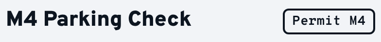
12| Size | 380px × 32px |
|---|---|
| Border | 0px none #0d1520 |
| Fill | #000000 0% / #000000 0% |
| Part | Font | Text light / dark | Fill | |
|---|---|---|---|---|
| 1 | Title 191px × 32px · at 0, 0 | Overpass 900, 22.4px/32.48px, -0.224px | #0d1520 / #f3f6fa | – |
| 2 | Permit chip 95px × 27px · at 285, 3 | Overpass Mono 700, 13.6px/normal | #0d1520 / #f3f6fa | – |
Use. Top of the screen. App name and permit chip.
Behaviour. Not interactive.
DS-CMP-02 Section card
 1
1| Size | 380px × 104px |
|---|---|
| Padding | 16px |
| Corner radius | 12px |
| Border | 1px solid #b9c3cf |
| Fill | #ffffff / #161e28 |
| Part | Font | Text light / dark | Fill | |
|---|---|---|---|---|
| 1 | Card 380px × 104px · at 0, 0 | Overpass 400, 16px/23.2px | #0d1520 / #f3f6fa | #ffffff |
Use. One section card per region of the screen (IA-01).
Behaviour. Not interactive. A section is hidden when its region has no content.
DS-CMP-03 Week banner
| Size | 346px × 70px |
|---|---|
| Border | 0px none #0d1520 |
| Fill | #000000 0% / #000000 0% |
| Part | Font | Text light / dark | Fill | |
|---|---|---|---|---|
| 1 | Week number 142px × 35px · at 0, 0 | Overpass 900, 35.2px/35.2px | #0d1520 / #f3f6fa | – |
| 2 | Odd week pill (filled) 101px × 36px · at 156, 0 | Overpass 800, 16px/normal | #ffffff / #161e28 | #0d1520 |
| 3 | Next week line 346px × 20px · at 0, 50 | Overpass 400, 13.6px/19.72px | #3f4b5a / #b6c2d0 | – |
Use. Week number and week type at the top of the screen.
Behaviour. Not interactive. Updates every minute. The pill is filled for odd weeks and outlined for even weeks, so the week type does not depend on colour.
DS-CMP-04 Section heading
| Size | 346px × 18px |
|---|---|
| Border | 0px none #3f4b5a |
| Fill | #000000 0% / #000000 0% |
| Part | Font | Text light / dark | Fill | |
|---|---|---|---|---|
| 1 | Heading 346px × 18px · at 0, 0 | Overpass 800, 12.48px/18.096px, 0.9984px, upper case | #3f4b5a / #b6c2d0 | – |
Use. Heading of a section.
Behaviour. Not interactive.
DS-CMP-05 Text field with label
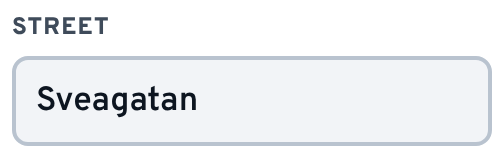
12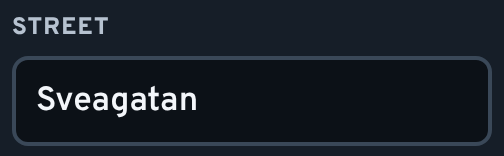
Dark mode| Size | 240px × 66px |
|---|---|
| Border | 0px none #0d1520 |
| Fill | #000000 0% / #000000 0% |
| Part | Font | Text light / dark | Fill | |
|---|---|---|---|---|
| 1 | Label 240px × 17px · at 0, 0 | Overpass 800, 12px/17.4px, 0.6px, upper case | #3f4b5a / #b6c2d0 | – |
| 2 | Input 240px × 45px · at 0, 21 | Overpass 600, 16.8px/normal | #0d1520 / #f3f6fa | #f2f4f7 |
Use. Street and Number fields. Label above the field.
Behaviour. Tap: the field gets a blue border and the keyboard opens. Street suggests M-zone street names while the user types. Empty field + Check: the app shows 'Enter both a street and a number.' below the form.
DS-CMP-06 Primary button
| Size | 346px × 47px |
|---|---|
| Padding | 13px |
| Corner radius | 10px |
| Border | 0px none #ffffff |
| Fill | #0b5cad / #3b8be0 |
| Part | Font | Text light / dark | Fill | |
|---|---|---|---|---|
| 1 | Button 346px × 47px · at 0, 0 | Overpass 900, 16.8px/normal | #ffffff / #ffffff | #0b5cad |
Use. Check. One primary button per region.
Behaviour. Tap: the app checks the address and shows the result in R5. Empty fields: the app shows an error and keeps the old result.
DS-CMP-07 Secondary button
| Size | 56px × 33px |
|---|---|
| Padding | 6px 12px |
| Corner radius | 8px |
| Border | 2px solid #b9c3cf |
| Fill | #ffffff / #161e28 |
| Part | Font | Text light / dark | Fill | |
|---|---|---|---|---|
| 1 | Button 56px × 33px · at 0, 0 | Overpass 700, 13.6px/normal | #0d1520 / #f3f6fa | #ffffff |
Use. Now, Clear, I moved the car.
Behaviour. Now: sets the start time to the current time. Clear: deletes the until time. I moved the car: deletes the saved car and its reminders.
DS-CMP-08 Verdict card: allowed
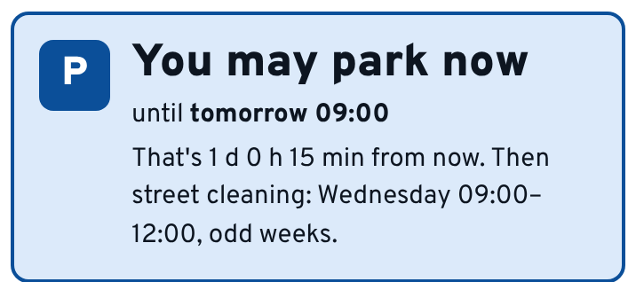
1234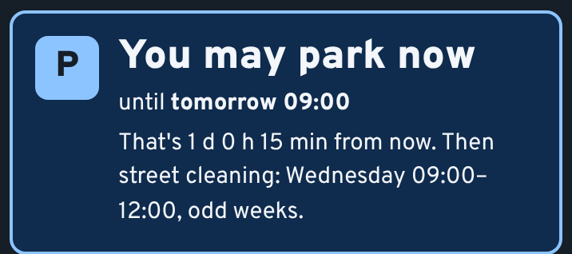
Dark mode| Size | 346px × 153px |
|---|---|
| Padding | 14px |
| Corner radius | 10px |
| Border | 2px solid #0b4f99 |
| Fill | #dceafa / #0f2b4d |
| Part | Font | Text light / dark | Fill | |
|---|---|---|---|---|
| 1 | Card 346px × 153px · at 0, 0 | Overpass 400, 16px/23.2px | #0d1520 / #f3f6fa | #dceafa |
| 2 | Mark 40px × 40px · at 16, 16 | Overpass 900, 22.4px/normal | #ffffff / #161e28 | #0b4f99 |
| 3 | Verdict 262px × 28px · at 68, 16 | Overpass 900, 25.6px/28.16px | #0d1520 / #f3f6fa | – |
| 4 | Detail 262px × 21px · at 68, 48 | Overpass 400, 14.72px/21.344px | #0d1520 / #f3f6fa | – |
Use. Answer that parking is allowed.
Behaviour. Not interactive.
DS-CMP-09 Verdict card: not allowed
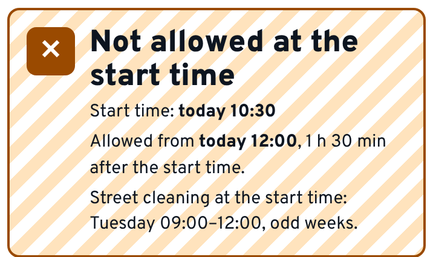
123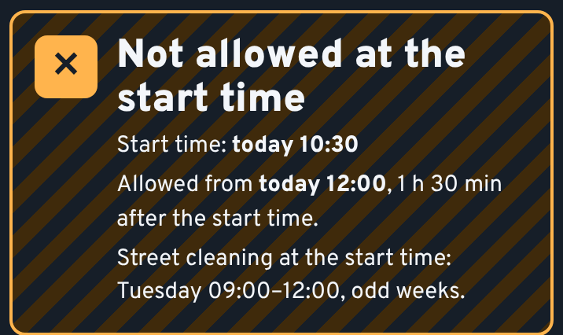
Dark mode| Size | 346px × 207px |
|---|---|
| Padding | 14px |
| Corner radius | 10px |
| Border | 2px solid #9a4a00 |
| Fill | #ffffff / #161e28 |
| Pattern | diagonal stripes |
| Part | Font | Text light / dark | Fill | |
|---|---|---|---|---|
| 1 | Card 346px × 207px · at 0, 0 | Overpass 400, 16px/23.2px | #0d1520 / #f3f6fa | #ffffff |
| 2 | Mark 40px × 40px · at 16, 16 | Overpass 900, 22.4px/normal | #ffffff / #161e28 | #9a4a00 |
| 3 | Verdict 262px × 56px · at 68, 16 | Overpass 900, 25.6px/28.16px | #0d1520 / #f3f6fa | – |
Use. Answer that parking is not allowed, or that the user must pay or move.
Behaviour. Not interactive. Stripes and the mark ✕ show the state without colour.
DS-CMP-10 Info card
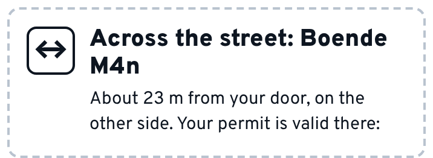
123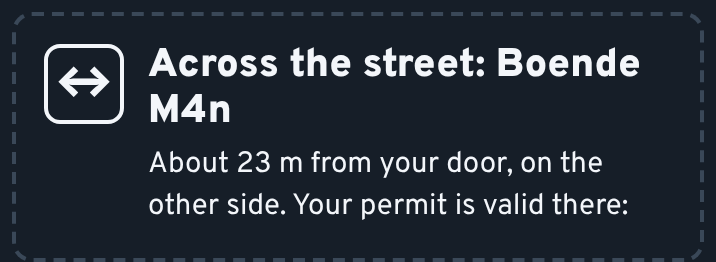
Dark mode| Size | 346px × 125px |
|---|---|
| Padding | 14px |
| Corner radius | 10px |
| Border | 2px dashed #b9c3cf |
| Fill | #000000 0% / #000000 0% |
| Part | Font | Text light / dark | Fill | |
|---|---|---|---|---|
| 1 | Card 346px × 125px · at 0, 0 | Overpass 400, 16px/23.2px | #0d1520 / #f3f6fa | – |
| 2 | Mark 40px × 40px · at 16, 16 | Overpass 900, 22.4px/normal | #0d1520 / #f3f6fa | – |
| 3 | Title 262px × 46px · at 68, 16 | Overpass 900, 20px/23px | #0d1520 / #f3f6fa | – |
Use. Extra information that changes the answer, for example the M section across the street.
Behaviour. Not interactive. Dashed border.
DS-CMP-11 Key–value list
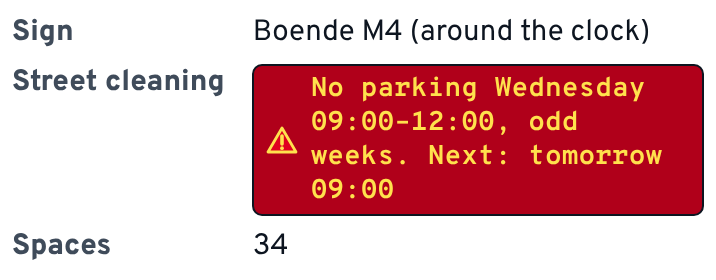
12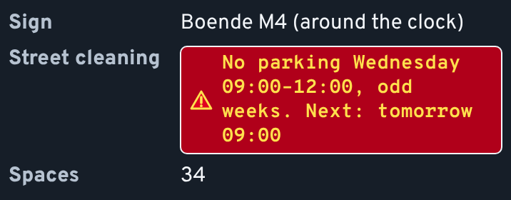
Dark mode| Size | 346px × 129px |
|---|---|
| Border | 0px none #0d1520 |
| Fill | #000000 0% / #000000 0% |
| Part | Font | Text light / dark | Fill | |
|---|---|---|---|---|
| 1 | Key 106px × 21px · at 0, 0 | Overpass 700, 14.72px/21.344px | #3f4b5a / #b6c2d0 | – |
| 2 | Value 226px × 21px · at 120, 0 | Overpass 400, 14.72px/21.344px | #0d1520 / #f3f6fa | – |
Use. Details under a verdict: sign, street cleaning, spaces, also here.
Behaviour. Not interactive.
DS-CMP-12 Cleaning badge: soon
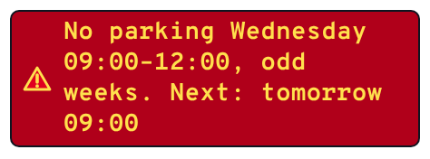
1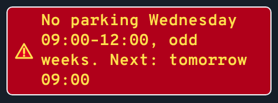
Dark mode| Size | 226px × 76px |
|---|---|
| Padding | 3px 8px 3px 6px |
| Corner radius | 5px |
| Border | 1px solid #0d1520 |
| Fill | #b0001a / #b0001a |
| Part | Font | Text light / dark | Fill | |
|---|---|---|---|---|
| 1 | Badge 226px × 76px · at 0, 0 | Overpass Mono 800, 13.6px/normal | #ffe14d / #ffe14d | #b0001a |
Use. Street cleaning now or in the next 7 days.
Behaviour. Not interactive. The same badge appears on the map as a label.
DS-CMP-13 Cleaning badge: later
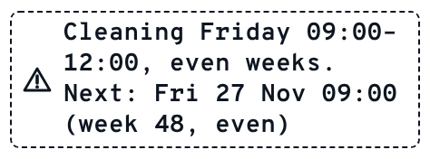
1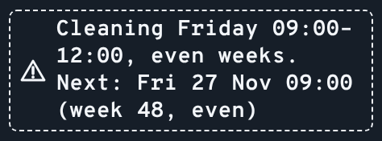
Dark mode| Size | 226px × 76px |
|---|---|
| Padding | 3px 8px 3px 6px |
| Corner radius | 5px |
| Border | 1px dashed #0d1520 |
| Fill | #ffffff / #161e28 |
| Part | Font | Text light / dark | Fill | |
|---|---|---|---|---|
| 1 | Badge 226px × 76px · at 0, 0 | Overpass Mono 800, 13.6px/normal | #0d1520 / #f3f6fa | #ffffff |
Use. Street cleaning that does not apply in the next 7 days.
Behaviour. Not interactive.
DS-CMP-14 Suggestion row with bar
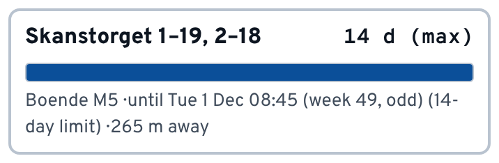
123456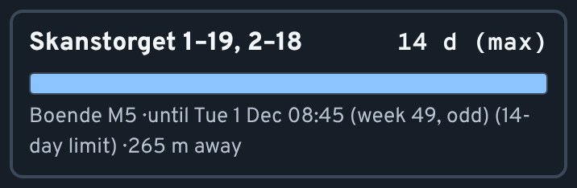
Dark mode| Size | 346px × 105px |
|---|---|
| Padding | 8px 10px |
| Corner radius | 8px |
| Border | 2px solid #b9c3cf |
| Fill | #ffffff / #161e28 |
| Part | Font | Text light / dark | Fill | |
|---|---|---|---|---|
| 1 | Row 346px × 105px · at 0, 0 | Overpass 400, 16px/23.2px | #0d1520 / #f3f6fa | #ffffff |
| 2 | Street 322px × 23px · at 12, 10 | Overpass 800, 16px/23.2px | #0d1520 / #f3f6fa | – |
| 3 | Stay 94px × 19px · at 240, 12 | Overpass Mono 800, 15.2px/normal | #0d1520 / #f3f6fa | – |
| 4 | Bar track 322px × 14px · at 12, 39 | Overpass 400, 16px/23.2px | #0d1520 / #f3f6fa | #f2f4f7 |
| 5 | Bar fill 320px × 12px · at 13, 40 | Overpass 400, 16px/23.2px | #0d1520 / #f3f6fa | #0b4f99 |
| 6 | Details 322px × 38px · at 12, 57 | Overpass 400, 13.12px/19.024px | #3f4b5a / #b6c2d0 | – |
Use. One suggestion in Longest stays nearby.
Behaviour. Tap: the app scrolls to the map, moves the map to the section and outlines it. The row keeps a dark border while it is selected (aria-pressed).
DS-CMP-15 Legend
| Size | 346px × 211px |
|---|---|
| Border | 0px none #0d1520 |
| Fill | #000000 0% / #000000 0% |
| Part | Font | Text light / dark | Fill | |
|---|---|---|---|---|
| 1 | Item 225px × 19px · at 0, 0 | Overpass 400, 13.12px/19.024px | #0d1520 / #f3f6fa | – |
Use. Explains the map symbols below the map.
Behaviour. Not interactive.
DS-CMP-16 Hint and note text
| Size | 346px × 20px |
|---|---|
| Border | 0px none #0d1520 |
| Fill | #000000 0% / #000000 0% |
| Part | Font | Text light / dark | Fill | |
|---|---|---|---|---|
| 1 | Note 346px × 20px · at 0, 0 | Overpass 700, 14.08px/20.416px | #0d1520 / #f3f6fa | – |
Use. Notes and hints: corrected street name, estimated position, reminders note.
Behaviour. Not interactive.
DS-CMP-17 My car header
| Size | 346px × 93px |
|---|---|
| Border | 0px none #0d1520 |
| Fill | #000000 0% / #000000 0% |
| Part | Font | Text light / dark | Fill | |
|---|---|---|---|---|
| 1 | Address 221px × 23px · at 0, 0 | Overpass 900, 20px/23px | #0d1520 / #f3f6fa | – |
| 2 | Parked line 221px × 21px · at 0, 27 | Overpass 400, 14.72px/21.344px | #0d1520 / #f3f6fa | – |
| 3 | Button 128px × 33px · at 0, 60 | Overpass 700, 13.6px/normal | #0d1520 / #f3f6fa | #ffffff |
Use. Top of the My car card.
Behaviour. I moved the car: deletes the car. No confirmation, because the user can save the car again with one tap.
DS-CMP-18 Pay buttons
| Size | 262px × 130px |
|---|---|
| Border | 0px none #0d1520 |
| Fill | #000000 0% / #000000 0% |
| Part | Font | Text light / dark | Fill | |
|---|---|---|---|---|
| 1 | Pay button 225px × 44px · at 0, 0 | Overpass 900, 16px/normal | #ffffff / #ffffff | #0b5cad |
| 2 | Link button 209px × 33px · at 0, 54 | Overpass 700, 13.6px/normal | #0d1520 / #f3f6fa | #ffffff |
Use. Actions that leave the app: Open Parkering Göteborg, Pay by SMS, Stop SMS parking.
Behaviour. Shown only when the section has paid parking. Open Parkering Göteborg: opens the app, or its store page if it is not installed. Pay by SMS: opens the SMS app with the platskod. The user must tap Send.
DS-CMP-19 Map with labels
| Size | 346px × 363px |
|---|---|
| Corner radius | 10px |
| Border | 1px solid #b9c3cf |
| Fill | #ffffff / #161e28 |
| Part | Font | Text light / dark | Fill | |
|---|---|---|---|---|
| 1 | Map frame 346px × 363px · at 0, 0 | Overpass 400, 16px/23.2px | #0d1520 / #f3f6fa | #ffffff |
| 2 | Zoom button 40px × 40px · at 295, 11 | Overpass 900, 20.8px/20.8px | #0d1520 / #f3f6fa | #ffffff |
Use. Map with streets, sections, labels, parking place and zoom buttons.
Behaviour. One finger or mouse: move. Two fingers, mouse wheel, + and −: zoom from 0.5× to 9×. ◎: back to the parking place. Labels appear by zoom level (IA-09).
DS-CMP-20 Date and time field
Use. Start time and Until.
Behaviour. Tap: the system date and time picker opens. A change runs the check again at once.
States: see 5.6.
DS-CMP-21 Map zoom button
Use. +, − and ◎ on the map.
Behaviour. Tap: zoom by 1.5×, or return to the parking place. At the zoom limit the button stays active and has no effect (see DS-DEBT-04).
States: see 5.6.
DS-CMP-22 Location button
Use. Use my location.
Behaviour. Tap: the app asks for the position. The text next to the button shows 'Finding your position…', then the address, the distance and the accuracy, or a message if location is refused or not near an M-zone street.
States: see 5.6.
5.6 Interaction states (DS-STA)
These rules apply to every interactive element. The column "In app" says if the app has the state today. The strips below are captures from the app. A state that the app does not style looks the same as Default.
| ID | State | Rule | In app |
|---|---|---|---|
| DS-STA-01 | Default | The element as defined in its component. | Yes |
| DS-STA-02 | Hover (mouse only) | Primary: background 10 % darker. Secondary and rows: border in Ink. Cursor: pointer. | Rows only |
| DS-STA-03 | Keyboard focus | 3 px outline in Action blue, 2 px offset. Fields: border in Action blue. | Yes |
| DS-STA-04 | Pressed | Background 15 % darker, or border in Ink, for 100 ms or while pressed. | Rows only |
| DS-STA-05 | Selected | Border in Ink and a 1 px inner line. aria-pressed=true. | Rows only |
| DS-STA-06 | Disabled | Avoid. Hide an action that is not available, or show why it is not available. If a disabled state is necessary: opacity 45 %, cursor not-allowed, no hover, and a text that gives the reason. | No |
| DS-STA-07 | Error | A message in Not-allowed orange, bold, below the form. It says what is wrong and how to fix it. | Yes |
| DS-STA-08 | Busy | The text next to the control says what the app does, for example 'Finding your position…'. | Location only |
DS-CMP-06 Primary button

Base style
No own style
outline: #0b5cad solid 3px

No own style

No own style
DS-CMP-07 Secondary button

Base style

No own style
outline: #0b5cad solid 3px

No own style
No own style
DS-CMP-05 Text field with label
Base style
No own style
borderColor: #0b5cad
borderColor: #0b5cad

cursor: default
DS-CMP-20 Date and time field

Base style
No own style
borderColor: #0b5cad
borderColor: #0b5cad
No own style
DS-CMP-14 Suggestion row with bar
Base style

borderColor: #0d1520
outline: #0b5cad solid 3px
borderColor: #0d1520

No own style
DS-CMP-18 Pay buttons

Base style
No own style
outline: #0b5cad solid 3px

No own style

No own style · Not possible on a link
DS-CMP-21 Map zoom button

Base style

No own style
outline: #0b5cad solid 3px
No own style

No own style
DS-CMP-22 Location button

Base style

No own style
outline: #0b5cad solid 3px
No own style

No own style
5.7 Design debt (DS-DEBT)
| ID | Gap | Fix |
|---|---|---|
| DS-DEBT-01 | Buttons have no hover and no pressed style (DS-STA-02, DS-STA-04). | Add the styles to .go, .ghost, .paybtn and the zoom buttons. |
| DS-DEBT-02 | The app has no own disabled style. A disabled field looks the same as an active field. | Apply DS-STA-06 if a feature needs a disabled control. |
| DS-DEBT-03 | The not-allowed verdict card is orange with stripes. Map lines for the same state are red. | Decide one colour for 'not allowed' and use it in both places. |
| DS-DEBT-04 | The zoom buttons stay active at the zoom limits. | Show the limit, for example with DS-STA-06 and a short text. |
| DS-DEBT-05 | Contrast ratios are not measured (NFR-ACC-003). | Measure every text and token pair in light and dark mode. |
6 Architecture
This chapter shows how the parts of M4 Parking Check fit together. Each diagram has an ID (AR-nn). The diagram sources are text files in spec/diagrams/, so a change to the architecture is a change to a file in the repository.
6.1 AR-01 System context
M4 Parking Check runs on the phone of the user. It has no server of its own. GitHub builds and hosts everything. The app opens other apps for payment. It does not handle money.

spec/diagrams/AR-01-context.mmd| External system | What the app gets or gives | How often |
|---|---|---|
| Göteborgs Stad open WFS | Residential parking, street cleaning, paid parking | Every Monday |
| OpenStreetMap | House numbers, street lines | First Monday of the month |
| GitHub | Hosting of the web app, the APK and this document | On each change |
| Parkering Göteborg app | Payment, started and approved by the user | When the user taps a button |
| SMS 72 430 | Payment by SMS, sent by the user | When the user taps Send |
6.2 AR-02 Components
The app has four layers. The user interface and the app logic are one HTML file with JavaScript. The data is one JSON file. The Android shell exists only in the APK.

spec/diagrams/AR-02-components.mmd| Component | Code | Job |
|---|---|---|
| Street search | resolveStreet() |
Finds the M-zone street from what the user typed |
| Address location | locate(), makeSide() |
Finds the house number position and its side of the street |
| Rules engine | status(), nextChange() |
Says if parking is allowed at a time, and when that changes |
| Calendar | isoWeek(), holidays() |
ISO week numbers and Swedish public holidays |
| Pay-or-move plan | plan(), estCost() |
Free time, then pay or move, for the saved car |
| Map | drawMap(), zoomAt() |
Draws streets, sections and labels as SVG |
| Label placer | tryLabel(), fits() |
Places labels without overlap |
| Reminders | scheduleCar() |
Schedules Android notifications |
6.3 AR-03 Data pipeline
The pipeline turns three sources into one compact file, docs/data.json. It stops if the result looks incomplete.

spec/diagrams/AR-03-pipeline.mmd6.4 AR-04 Deployment
GitHub Actions does all builds. GitHub Pages serves the web app, the sales deck and this document. GitHub Releases holds each APK.

spec/diagrams/AR-04-deployment.mmd| Workflow | Starts | Result |
|---|---|---|
| Refresh parking data | Every Monday 02:17 UTC, or by hand | New docs/data.json if the data changed |
| Build Android app | A change to the app, the icons or app/ |
APK as release v1.n |
| pages-build-deployment | Each change on main |
New version of the website |
6.5 AR-05 Check an address

spec/diagrams/AR-05-seq-check.mmd6.6 AR-06 Park, then pay or move

spec/diagrams/AR-06-seq-pay.mmd6.7 AR-08 Technology
| Part | Technology | Version |
|---|---|---|
| App | HTML, CSS, JavaScript, no framework | – |
| Fonts | Overpass, Overpass Mono (Google Fonts) | – |
| Android shell | Capacitor | 6.2.0 |
| Android plugins | Local notifications, App launcher, App | 6.1.3, 6.0.4, 6.0.3 |
| Pipeline | Python, pyproj | 3.12, 3.6.1 |
| Coordinates | SWEREF 99 12 00 (EPSG:3007) to WGS 84 | – |
| Hosting | GitHub Pages, GitHub Releases | – |
| Build | GitHub Actions | – |
6.8 AR-09 Data file
docs/data.json uses arrays, not named fields, to keep the file small (about 500 kB).
| Key | Content |
|---|---|
v |
Download date |
streets |
Names of the M-zone streets |
seg |
M sections: street, taxa, night sign, spaces, coordinates, street cleaning rules, paid parking |
paid |
Paid parking: taxa, platskod, price text, maximum time, time limit |
addr |
Addresses: street, number, letter, latitude, longitude |
rnames, roads |
Street names and street lines for the map |
olabels, other |
Other parking for the map |
7 Solution design
This chapter records the main design decisions (ADR-nnn) and the logic of the rules engine. Each decision gives the situation, the decision and the result.
7.1 AR-07 Rules engine
The rules engine answers one question: is parking allowed in M section s at time t? nextChange() asks this question every 15 minutes ahead, until the answer changes.

spec/diagrams/AR-07-rules.mmd7.2 ADR-001 A static app with the data inside
- Situation. The app must work in the street, often with a weak network. The project has no budget for a server.
- Decision. The app is one static web page with one data file. GitHub Pages hosts it. There is no server.
- Result. The app works offline and costs nothing to run. The data is as new as the last weekly refresh.
7.3 ADR-002 City data for the rules, OpenStreetMap for addresses
- Situation. The city data has the signs and the street cleaning, but no house numbers.
- Decision. The app takes all rules from the city, and the house numbers and streets from OpenStreetMap.
- Result. The user can search by address. The position of a house number has an accuracy of some metres. The app says when it estimates a position.
7.4 ADR-003 No API keys and no payment in the app
- Situation. The repository is public. Keys in a public repository are not secret.
- Decision. The app uses only open data without keys. Payment happens in the Parkering Göteborg app or by SMS, and the user approves it there.
- Result. No secret exists to leak. The app never holds card data.
7.5 ADR-004 Capacitor for the Android app
- Situation. The user wants an Android app with reminders, without a store account.
- Decision. Capacitor wraps the web app in an Android shell and adds notifications and an app launcher.
- Result. One code base for the web app and the Android app. The APK installs directly from GitHub Releases.
7.6 ADR-005 A map drawn by the app
- Situation. Map tiles from Google need a key and an account. The colours of a tile map cannot be controlled.
- Decision. The app draws streets, sections and labels as SVG from the data file.
- Result. The map works offline, needs no key and uses only colours without red/green pairs.
7.7 ADR-006 Time in steps of 15 minutes
- Situation. The rules change at full and half hours. The app must find the next change quickly.
- Decision. The engine checks the status every 15 minutes, for up to 15 days.
- Result. Simple code that is easy to test. A rule at another minute would show up to 14 minutes late.
7.8 ADR-007 Side of the street from the street centre line
- Situation. The two sides of a street can have different signs.
- Decision. The app uses the OpenStreetMap centre line to find which side the house number and each section are on.
- Result. The app checks the side of the house number first, and shows the other side as an option.
7.9 ADR-008 Colours with a second sign
- Situation. The main user is colour blind.
- Decision. No red/green pairs. Each colour that has a meaning also has a word, an icon, a stripe, a dash or a dot.
- Result. The design system (DS-COL, DS-CMP) applies this rule to every element.
7.10 ADR-009 Weekly city data, monthly addresses
- Situation. Signs and street cleaning rules change often. Addresses change rarely. OpenStreetMap asks users to keep the load low.
- Decision. City data every Monday. OpenStreetMap data on the first Monday of each month.
- Result. Current rules, and a low load on OpenStreetMap.
7.11 ADR-010 Never overwrite a version
- Situation. The user wants every change to be a new version.
- Decision. Every change is a new commit. The build scripts refuse to overwrite a version file. Before a large change, the earlier state goes to a named branch.
- Result. Each earlier version stays available.
7.12 ADR-011 A new test key for each APK
- Situation. A permanent signing key needs a safe place outside the public repository.
- Decision. Each build signs the APK with a new test key.
- Result. The user must uninstall the old version before an update. A permanent key in GitHub Secrets removes this step later (NFR-SEC-004).
8 Points for review
These requirements are not fully verified. Version 1.0 closes them with a test, a measurement or a decision.
| ID | Status | Requirement |
|---|---|---|
| FR-07.01.001 | ◐ Implemented, not verified on device | The app shall fill in the address from the position of the device when the user taps 'Use my location'. |
| FR-08.03.001 | ◐ Implemented, not verified on device | The 'Open Parkering Göteborg' button shall open the Parkering Göteborg app. |
| FR-08.03.002 | ◐ Implemented, not verified on device | If the Parkering Göteborg app is not installed, the button shall open the app store page of the Parkering Göteborg app. |
| FR-08.04.001 | ◐ Implemented, not verified on device | The 'Pay by SMS' button shall open the SMS app with the number 72 430 and the platskod as the message. |
| FR-08.04.005 | ◐ Implemented, not verified on device | The 'Stop SMS parking' button shall open the SMS app with the number 72 430 and the message 'avsluta'. |
| FR-08.05.001 | ◐ Implemented, not verified on device | The Android app shall send a reminder 15 minutes before the free time ends. |
| FR-08.05.002 | ◐ Implemented, not verified on device | The Android app shall send a reminder when the free time ends. |
| FR-08.05.003 | ◐ Implemented, not verified on device | A reminder for paid parking shall have two buttons: 'Open Parkering Göteborg' and 'Pay by SMS'. |
| FR-08.05.004 | ◐ Implemented, not verified on device | The Android app shall send a reminder to stop the payment when the permit allows free parking again. |
| FR-08.05.005 | ◐ Implemented, not verified on device | The Android app shall send a reminder 1 hour before the 14-day limit. |
| FR-08.05.006 | ◐ Implemented, not verified on device | The Android app shall ask for permission to send notifications when the user taps 'I parked here'. |
| FR-08.05.007 | ◐ Implemented, not verified on device | The Android app shall calculate and schedule the reminders again each time the user opens the app. |
| FR-09.05.002 | ◐ Implemented, not verified on device | When the Android app is online, it shall download newer data from the web app. |
| FR-09.05.003 | ◐ Implemented, not verified on device | When the Android app is offline, it shall use the newest data that it saved. |
| NFR-ACC-003 | ○ Open | Text shall have a contrast ratio of 4.5:1 or more against its background, as in WCAG 2.2 level AA. |
| NFR-PERF-001 | ○ Open | The app shall show the result 1 second or less after the user taps Check, on a mid-range phone. |
| NFR-PERF-003 | ○ Open | The map shall follow the finger without a visible delay when the user zooms or moves it. |
| NFR-SEC-004 | ○ Open | If the project uses a permanent signing key, the key shall be stored in GitHub Secrets. |
| NFR-DATA-004 | ○ Open | The project shall compare the platskod list with an official Parkering Göteborg source. |
| NFR-COMP-001 | ◐ Implemented, not verified on device | The Android app shall run on Android 5.1 (API level 22) or later. |
| NFR-COMP-002 | ○ Open | The web app shall work in the current versions of Chrome, Firefox, Safari and Edge. |
9 Chapters in version 1.0
- Technical specification. Algorithms in detail: geometry matching, label placement, Android shell.
- Data pipeline. Each script step, fields used, sanity checks, manual refresh.
- Known limits and risks. Impact and mitigation for each limit.
- Installation guides. IG-01 web app, IG-02 Android app, IG-03 developer setup.
- User guide. Task-based steps, with screens.
- Traceability. Requirements against test cases. Excel test matrix.
- Appendix A: Sales deck. Slides and link.
- Change log. Changes per version.
10 Glossary
- Address
- A street name and a house number, for example Sveagatan 12.
- Android app
- The app as an APK file that the user installs on an Android phone.
- Free time
- The period when the permit allows the user to park without payment.
- M section
- A parking section with a residential parking sign with zone letter M.
- Night sign
- A residential parking sign with the letter n, for example M4n. It allows residents to park only at night and on Sundays and public holidays.
- Parking section
- A part of a street where one set of parking rules applies, as recorded in the city data.
- Permit
- The M4 residential parking permit (boendeparkeringstillstånd) of the user. Zone letter M, taxa 4.
- Pipeline
- The scripts and workflows that download, match and publish the street data.
- Platskod
- The code that a payment app or SMS uses for a parking area. It can be different in each payment app.
- Start time
- The date and time that the app checks. By default, the current time.
- Street cleaning
- Hours when nobody can park in a parking section, so that the city can clean the street.
- Taxa
- A price class. On a residential sign, the permit is valid on the same or a higher taxa number. On a paid parking sign, the taxa sets the price.
- Until time
- An optional end date and time. The app then checks the full period from the start time.
- Web app
- The app in a web browser, on marwa112.github.io/m4-parking.
- Week type
- Odd week or even week, from the ISO 8601 week number.
- Zone letter
- The letter on a residential parking sign that names the permit area, for example M.
11 Sources
- U1
- User request, 2026-10-19: check where and when an M4 permit allows parking
- U2
- User request, 2026-10-19: address lookup, permit check first, then now, how long or from when
- U3
- User request, 2026-10-19: high contrast, no red/green colour pairs (colour vision)
- U4
- User request, 2026-10-19: map labels show odd or even week, app shows the week number
- U5
- User request, 2026-10-19: zoomable map, fuzzy street search, both sides of the street
- U6
- User request, 2026-10-19: cleaning warning style, legend wording, 'now' only for live time
- U7
- User request, 2026-10-19: until time, longest stays nearby as bars
- U8
- User request, 2026-10-20: Android app, web app, no keys in the repository
- U9
- User request, 2026-11-17: pay through the parking app when free time ends, SMS as fallback
- U10
- User preference: never overwrite, every change is a new version
- R1
- Göteborgs Stad, Regler för boendeparkering (regler_boendeparkering_260309.pdf)
- C1
- Göteborgs Stad open WFS service, open.geodata.tkgbg.se
- O1
- OpenStreetMap (addresses and streets)
- P1
- Parkering Göteborg, Betala parkering (app, SMS 72 430, platskod)
- P2
- hittaparkering.com, Parkeringszoner i Göteborg (platskod per taxa), third-party
- D1
- Design decision during the build (see Solution design)
12 Index
12.1 Term index
- Address FR-01.01.008, FR-01.02.001, FR-01.02.003, FR-01.02.004, FR-05.01.001, FR-05.01.004, FR-05.03.001, FR-05.03.003, FR-07.01.001, FR-07.01.002, FR-07.01.003, FR-07.01.004, FR-08.01.001, FR-08.01.002, FR-09.02.003, FR-09.04.004, FR-10.01.001, NFR-OFF-001, NFR-PRIV-001
- Android app FR-08.05.001, FR-08.05.002, FR-08.05.004, FR-08.05.005, FR-08.05.006, FR-08.05.007, FR-08.05.008, FR-09.05.002, FR-09.05.003, FR-10.02.005, NFR-COMP-001
- Free time FR-08.02.001, FR-08.02.002, FR-08.05.001, FR-08.05.002
- M section FR-01.03.003, FR-01.03.004, FR-01.03.005, FR-01.03.006, FR-01.03.007, FR-01.03.008, FR-01.04.002, FR-01.04.003, FR-02.02.001, FR-02.02.006, FR-02.02.007, FR-05.02.001, FR-05.02.002, FR-05.02.003, FR-05.02.005, FR-05.03.002, FR-06.01.001, FR-06.01.004, FR-08.01.002, FR-08.02.003, FR-09.03.001, FR-09.03.003, FR-09.04.004, FR-09.05.001
- Night sign FR-02.01.001, FR-02.01.002, FR-02.01.003
- Parking section FR-05.03.006, FR-09.01.001, FR-09.01.004
- Permit FR-01.03.001, FR-01.03.002, FR-01.03.003, FR-03.01.001, FR-03.01.002, FR-03.01.003, FR-03.03.004, FR-03.03.005, FR-03.03.006, FR-06.01.001, FR-08.01.001, FR-08.05.004
- Pipeline FR-09.01.001, FR-09.01.002, FR-09.01.003, FR-09.01.004, FR-09.01.005, FR-09.02.001, FR-09.02.002, FR-09.02.003, FR-09.03.001, FR-09.03.002, FR-09.03.003, FR-09.03.004, FR-09.04.001, FR-09.04.002, FR-09.04.003, FR-09.04.004, FR-09.04.005, FR-09.04.006, NFR-MNT-003
- Platskod FR-08.04.001, FR-08.04.002, FR-08.04.003, FR-09.03.004, NFR-DATA-004
- Start time FR-02.02.002, FR-03.01.001, FR-03.02.001, FR-03.02.002, FR-03.02.003, FR-03.02.004, FR-03.02.005, FR-03.02.007, FR-03.03.002, FR-03.03.003, FR-04.02.001, FR-05.02.002, FR-05.02.003, FR-05.05.002, FR-06.01.001
- Street cleaning FR-02.01.006, FR-02.02.001, FR-02.02.002, FR-02.02.003, FR-02.02.005, FR-02.02.007, FR-04.02.001, FR-04.02.003, FR-04.02.004, FR-04.02.005, FR-04.02.006, FR-04.02.007, FR-08.02.004, FR-09.01.002, FR-09.03.001, FR-09.03.002
- Taxa FR-01.03.002, FR-01.04.004, FR-08.02.007, FR-08.04.002, FR-09.03.004
- Until time FR-03.03.001, FR-03.03.002, FR-03.03.003, FR-03.03.007, FR-06.01.007
- Web app FR-08.05.008, FR-09.05.002, FR-10.01.001, FR-10.01.002, FR-10.01.003, FR-10.01.004, NFR-COMP-002
- Week type FR-02.02.003, FR-02.02.004, FR-03.01.005, FR-04.01.003, FR-04.02.002, FR-04.02.006
- Zone letter FR-01.03.001, FR-09.01.004
12.2 ID index
EP-01 Address and permit check
EP-01 FE-01.01 FE-01.02 FE-01.03 FE-01.04 FR-01.01.001 FR-01.01.002 FR-01.01.003 FR-01.01.004 FR-01.01.005 FR-01.01.006 FR-01.01.007 FR-01.01.008 FR-01.02.001 FR-01.02.002 FR-01.02.003 FR-01.02.004 FR-01.02.005 FR-01.02.006 FR-01.03.001 FR-01.03.002 FR-01.03.003 FR-01.03.004 FR-01.03.005 FR-01.03.006 FR-01.03.007 FR-01.03.008 FR-01.04.001 FR-01.04.002 FR-01.04.003 FR-01.04.004
EP-02 Time rules engine
EP-02 FE-02.01 FE-02.02 FE-02.03 FE-02.04 FR-02.01.001 FR-02.01.002 FR-02.01.003 FR-02.01.004 FR-02.01.005 FR-02.01.006 FR-02.02.001 FR-02.02.002 FR-02.02.003 FR-02.02.004 FR-02.02.005 FR-02.02.006 FR-02.02.007 FR-02.03.001 FR-02.04.001 FR-02.04.002
EP-03 Start time and stay check
EP-03 FE-03.01 FE-03.02 FE-03.03 FR-03.01.001 FR-03.01.002 FR-03.01.003 FR-03.01.004 FR-03.01.005 FR-03.02.001 FR-03.02.002 FR-03.02.003 FR-03.02.004 FR-03.02.005 FR-03.02.006 FR-03.02.007 FR-03.03.001 FR-03.03.002 FR-03.03.003 FR-03.03.004 FR-03.03.005 FR-03.03.006 FR-03.03.007
EP-04 Week and cleaning awareness
EP-04 FE-04.01 FE-04.02 FR-04.01.001 FR-04.01.002 FR-04.01.003 FR-04.01.004 FR-04.02.001 FR-04.02.002 FR-04.02.003 FR-04.02.004 FR-04.02.005 FR-04.02.006 FR-04.02.007 FR-04.02.008
EP-05 Map
EP-05 FE-05.01 FE-05.02 FE-05.03 FE-05.04 FE-05.05 FR-05.01.001 FR-05.01.002 FR-05.01.003 FR-05.01.004 FR-05.02.001 FR-05.02.002 FR-05.02.003 FR-05.02.004 FR-05.02.005 FR-05.03.001 FR-05.03.002 FR-05.03.003 FR-05.03.004 FR-05.03.005 FR-05.03.006 FR-05.04.001 FR-05.04.002 FR-05.04.003 FR-05.05.001 FR-05.05.002
EP-06 Longest stays nearby
EP-06 FE-06.01 FE-06.02 FR-06.01.001 FR-06.01.002 FR-06.01.003 FR-06.01.004 FR-06.01.005 FR-06.01.006 FR-06.01.007 FR-06.02.001 FR-06.02.002
EP-07 Location
EP-07 FE-07.01 FR-07.01.001 FR-07.01.002 FR-07.01.003 FR-07.01.004 FR-07.01.005
EP-08 My car and payment
EP-08 FE-08.01 FE-08.02 FE-08.03 FE-08.04 FE-08.05 FR-08.01.001 FR-08.01.002 FR-08.01.003 FR-08.01.004 FR-08.02.001 FR-08.02.002 FR-08.02.003 FR-08.02.004 FR-08.02.005 FR-08.02.006 FR-08.02.007 FR-08.02.008 FR-08.02.009 FR-08.03.001 FR-08.03.002 FR-08.03.003 FR-08.04.001 FR-08.04.002 FR-08.04.003 FR-08.04.004 FR-08.04.005 FR-08.05.001 FR-08.05.002 FR-08.05.003 FR-08.05.004 FR-08.05.005 FR-08.05.006 FR-08.05.007 FR-08.05.008
EP-09 Data pipeline
EP-09 FE-09.01 FE-09.02 FE-09.03 FE-09.04 FE-09.05 FR-09.01.001 FR-09.01.002 FR-09.01.003 FR-09.01.004 FR-09.01.005 FR-09.02.001 FR-09.02.002 FR-09.02.003 FR-09.03.001 FR-09.03.002 FR-09.03.003 FR-09.03.004 FR-09.04.001 FR-09.04.002 FR-09.04.003 FR-09.04.004 FR-09.04.005 FR-09.04.006 FR-09.05.001 FR-09.05.002 FR-09.05.003
EP-10 Distribution
EP-10 FE-10.01 FE-10.02 FR-10.01.001 FR-10.01.002 FR-10.01.003 FR-10.01.004 FR-10.02.001 FR-10.02.002 FR-10.02.003 FR-10.02.004 FR-10.02.005
NFR-ACC Accessibility and colour vision
NFR-ACC-001 NFR-ACC-002 NFR-ACC-003 NFR-ACC-004 NFR-ACC-005 NFR-ACC-006
NFR-USE Usability and wording
NFR-PERF Performance
NFR-OFF Offline use
NFR-PRIV Privacy
NFR-SEC Security
NFR-DATA Data quality
NFR-COMP Compatibility
NFR-MNT Maintainability
NFR-LEG Licences and credits
NFR-VER Versions
Screens (SC)
SC-01.01-1 SC-01.01-2 SC-01.01-3 SC-01.02-1 SC-01.02-2 SC-01.03-1 SC-01.03-2 SC-01.03-3 SC-01.04-1 SC-02.01-1 SC-02.01-2 SC-02.02-1 SC-02.03-1 SC-03.01-1 SC-03.02-1 SC-03.02-2 SC-03.03-1 SC-03.03-2 SC-04.01-1 SC-04.02-1 SC-04.02-2 SC-05.01-1 SC-05.02-1 SC-05.03-1 SC-05.04-1 SC-05.05-1 SC-06.01-1 SC-06.02-1 SC-07.01-1 SC-07.01-2 SC-08.01-1 SC-08.01-2 SC-08.02-1 SC-08.03-1 SC-08.02-2 SC-08.03-2 SC-08.04-1 SC-08.05-1 SC-08.05-2 SC-09.05-1 SC-10.01-1 SC-10.02-1
Solution design (AR, ADR)
AR-07 ADR-001 ADR-002 ADR-003 ADR-004 ADR-005 ADR-006 ADR-007 ADR-008 ADR-009 ADR-010 ADR-011
Design system (DS)
DS-COL-01 DS-COL-02 DS-COL-03 DS-COL-04 DS-COL-05 DS-COL-06 DS-COL-07 DS-COL-08 DS-COL-09 DS-COL-10 DS-COL-11 DS-COL-12 DS-COL-13 DS-COL-14 DS-COL-15 DS-COL-16 DS-COL-17 DS-COL-18 DS-TYP-01 DS-TYP-02 DS-TYP-03 DS-TYP-04 DS-TYP-05 DS-TYP-06 DS-TYP-07 DS-TYP-08 DS-TYP-09 DS-SPC-01 DS-SPC-02 DS-SPC-03 DS-SPC-04 DS-SPC-05 DS-SPC-06 DS-SPC-07 DS-ICN-01 DS-ICN-02 DS-ICN-03 DS-ICN-04 DS-ICN-05 DS-ICN-06 DS-ICN-07 DS-ICN-08 DS-ICN-09 DS-ICN-10 DS-CMP-01 DS-CMP-02 DS-CMP-03 DS-CMP-04 DS-CMP-05 DS-CMP-06 DS-CMP-07 DS-CMP-08 DS-CMP-09 DS-CMP-10 DS-CMP-11 DS-CMP-12 DS-CMP-13 DS-CMP-14 DS-CMP-15 DS-CMP-16 DS-CMP-17 DS-CMP-18 DS-CMP-19 DS-CMP-20 DS-CMP-21 DS-CMP-22 DS-STA-01 DS-STA-02 DS-STA-03 DS-STA-04 DS-STA-05 DS-STA-06 DS-STA-07 DS-STA-08 DS-DEBT-01 DS-DEBT-02 DS-DEBT-03 DS-DEBT-04 DS-DEBT-05